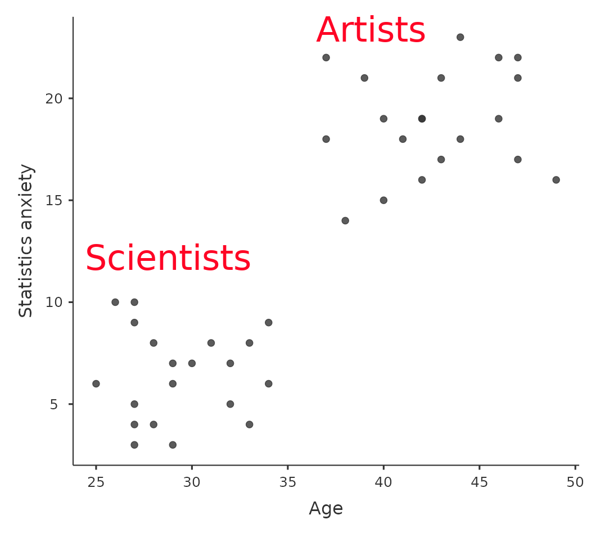

14 多因子變異數分析
譯者註 20230417初步以ChatGPT-4完成翻譯，內容待編修。
在過去的幾章中，我們已經做了很多事情。我們研究了當你有一個具有兩組的名義預測變量（例如，在 章节 11 中的t檢驗）或者具有三個或更多組時可以使用的統計檢驗（章节 13）。章节 12 介紹了一個強大的新概念，即使用多個連續預測變量建立統計模型，以解釋單個結果變量。例如，回歸模型可以用來預測學生在閱讀理解測驗中犯錯的次數，基於他們為測驗學習的時間和他們在標準化智商測驗中的分數。
本章的目標是將使用多個預測因子的概念擴展到ANOVA框架中。例如，假設我們有興趣使用閱讀理解測驗來衡量三所不同學校的學生成就，並且我們懷疑男孩和女孩的發展速度不同（因此，平均而言，預期表現會有所不同）。每個學生以兩種不同方式分類：根據他們的性別和根據他們所在的學校。我們想做的是根據這兩個分組變量分析閱讀理解成績。進行此操作的工具通常稱為因子ANOVA。但是，由於我們有兩個分組變量，我們有時將分析稱為雙因素ANOVA，與我們在 章节 13 中運行的單因素ANOVA相對。
14.1 平衡且無交互作用的因子設計分析
當我們在 章节 13 中討論變異數分析時，我們假設了一個相對簡單的實驗設計。每個人都在幾個小組中，我們想知道這些小組在某些結果變量上的平均分數是否有所不同。在本節中，我將討論一個更廣泛的實驗設計類別，稱為因子設計，其中我們有多個分組變量。在上面給出了這種設計可能產生的一個例子。另一個例子出現在 章节 13 中，我們在其中研究了不同藥物對每個人的情緒增益的影響。在那一章中，我們確實發現了藥物的顯著影響，但在章節的最後，我們還進行了一個分析，以查看治療是否有影響。我們沒有找到，但是在試圖預測相同結果的兩個單獨分析中有點令人擔憂。也許治療對情緒增益確實有影響，但我們找不到它，因為它被藥物的影響“隱藏”了？換句話說，我們將要進行一個包括藥物和治療作為預測因子的單一分析。對於這種分析，每個人都按照他們給定的藥物（具有3個水平的因子）和接受的治療（具有2個水平的因子）進行交叉分類。我們將此稱為\(3 \times 2\)因子設計。
如果我們用jamovi（見 章节 6.1 ）中的“頻率” - “應急表”分析交叉制表藥物和治療，我們將獲得在 图 14.1 中顯示的表格。
如您所見，我們不僅有與兩個因子的所有可能組合相對應的參與者，表明我們的設計是完全交叉，而且事實上每個組中都有相等數量的人。換句話說，我們擁有一個平衡設計。在本節中，我將談論如何分析來自平衡設計的數據，因為這是最簡單的情況。對於不平衡設計的情況相當繁瑣，所以我們暫時將其擱置。
14.1.1 多因子設計是因應什麼樣的假設？
就像單因子變異數分析一樣，因子變異數分析是一個用於測試關於母體均值的某些類型假設的工具。因此，一個明智的開始方式是明確我們的假設實際上是什麼。然而，在我們甚至到達這一點之前，有一個簡單清晰的表示法來描述母體均值是非常有用的。由於觀察是根據兩個不同因子進行交叉分類的事實，可能有很多不同的均值會引起我們的興趣。為了理解這一點，讓我們首先考慮在這種設計中可以計算出所有不同樣本均值。首先，很明顯，我們可能對此類組均值感興趣（ 表格 14.1 ）。
| drug | therapy | mood.gain |
| placebo | no.therapy | 0.30 |
| anxifree | no.therapy | 0.40 |
| joyzepam | no.therapy | 1.47 |
| placebo | CBT | 0.60 |
| anxifree | CBT | 1.03 |
| joyzepam | CBT | 1.50 |
接下來，下表（ 表格 14.2 ）顯示了兩個因子所有可能組合的組均值列表（例如，接受安慰劑且未接受治療的人、接受安慰劑並接受CBT的人等）。將所有這些數字，以及邊際和總體均值，整合到一個單一的表格中是非常有幫助的，這個表格看起來是這樣的：
| no therapy | CBT | total | |
| placebo | 0.30 | 0.60 | 0.45 |
| anxifree | 0.40 | 1.03 | 0.72 |
| joyzepam | 1.47 | 1.50 | 1.48 |
| total | 0.72 | 1.04 | 0.88 |
現在，這些不同的均值當然是樣本統計量。它是一個與我們在研究過程中所做的具體觀察相關的數量。我們想要對應的母體參數進行推斷。也就是說，真實的均值是在某個更廣泛的母體內存在的。這些母體均值也可以整理成一個類似的表格，但是我們需要一些數學符號來表示（表格 14.3）。像往常一樣，我將使用符號\(\mu\)來表示母體均值。然而，由於有很多不同的均值，我需要使用下標來區分它們。
這裡是符號如何運作的。我們的表格是根據兩個因子定義的。每行對應於因子A（在本例中為藥物）的不同水平，每列對應於因子B（在本例中為治療）的不同水平。如果我們讓R表示表格中的行數，並讓\(C\)表示列數，我們可以將其稱為\(R \times C\)因子變異數分析。在這種情況下\(R = 3\)和\(C = 2\)。我們將使用小寫字母來表示特定的行和列，因此\(\mu_{rc}\)表示與因子\(A\)的第\(r\)級（即第\(r\)行）和因子B的第\(c\)級（第c列）相關的母體均值。1 所以現在母體的均值是寫成@tbl-tab13-1的形式：
| no therapy | CBT | total | |
| placebo | \( \mu_{11} \) | \( \mu_{12} \) | |
| anxifree | \( \mu_{21} \) | \( \mu_{22} \) | |
| joyzepam | \( \mu_{31} \) | \( \mu_{32} \) | |
| total |
好的，那剩下的項目呢？例如，我們應該如何描述在這樣一個實驗中可能被給予Joyzepam的整個（假設的）人群的平均情緒提升，而不管他們是否接受了CBT治療？我們使用“點”符號來表示這一點。在Joyzepam的例子中，注意到我們正在討論表中第三行相關的均值。也就是說，我們將兩個單元格的均值（即\(\mu_{31}\)和\(\mu_{32}\)）求平均。這個求平均的結果被稱為邊際均值，並在這種情況下表示為\(\mu_3.\)。CBT的邊際均值對應於表中第二列相關的母體均值，因此我們使用表示法，因為它是通過平均（邊際化2）兩者而得到的均值。因此，我們的整個母體均值表格可以寫成@tbl-tab13-4。
| no therapy | CBT | total | |
| placebo | \( \mu_{11} \) | \( \mu_{12} \) | \( \mu_{1.} \) |
| anxifree | \( \mu_{21} \) | \( \mu_{22} \) | \( \mu_{2.} \) |
| joyzepam | \( \mu_{31} \) | \( \mu_{32} \) | \( \mu_{3.} \) |
| total | \( \mu_{.1} \) | \( \mu_{.2} \) | \( \mu_{..} \) |
現在我們有了這個表示法，很容易就可以形成和表達一些假設。假設目標是找出兩件事。首先，藥物的選擇是否對情緒有影響？其次，CBT 是否對情緒有影響？當然，這些不是我們可以制定的唯一假設，並且我們將在[因子 ANOVA 2：平衡設計，允許交互作用]一節中看到一個不同類型假設的非常重要示例，但這兩個假設是最簡單的檢驗，所以我們從這裡開始。考慮第一個檢驗。如果藥物沒有影響，那麼我們應該期望所有行均值相同，對吧？所以那就是我們的虛無假設。另一方面，如果藥物確實有關，那麼我們應該期望這些行均值不同。形式上，我們將虛無假設和替代假設表示為邊際均值的相等性：
\[\text{虛無假設, } H_0 \text{: 行均值相同，即 } \mu_{1. } = \mu_{2. } = \mu_{3. }\]
\[\text{替代假設, } H_1 \text{: 至少有一個行均值不同}\]
值得注意的是，這些與我們在 章节 13 中對這些數據進行單因素 ANOVA 時形成的統計假設完全相同。當時我使用符號 \(\mu_{P}\) 來表示安慰劑組的平均情緒增益，\(\mu_{A}\) 和 \(\mu_{J}\) 分別對應兩種藥物的組均值，並且虛無假設是 \(\mu_{P} = \mu_{A} = \mu_{J}\)。所以我們實際上在談論相同的假設，只不過由於存在多個分組變量，更複雜的 ANOVA 需要更仔細的表示法，因此我們現在將此假設表示為 \(\mu_{ 1.} = \mu_{ 2.} = \mu_{ 3.}\)。然而，正如我們將很快看到的那樣，儘管假設相同，但由於我們現在承認了第二個分組變量的存在，對該假設的檢驗存在微妙的不同。
談到其他分組變量，你可能不會感到驚訝地發現，我們的第二個假設檢驗也以相同的方式制定。然而，由於我們談論的是心理治療而不是藥物，我們的虛無假設現在對應於列均值的相等：
\[\text{虛無假設, } H_0 \text{: 列均值相同，即， } \mu_{ .1} = \mu_{ .2} \] \[\text{替代假設, } H_1 \text{: 列均值不同，即， } \mu_{ .1} \neq \mu_{ .2}\]
14.1.2 使用jamovi完成多因子變異數分析
我在上一節中描述的虛無假設和替代假設應該讓你感到非常熟悉。它們基本上與我們在 章节 13 中執行的更簡單的單因素ANOVA檢驗相同。所以你可能期望因子ANOVA中使用的假設檢驗本質上與 章节 13 中的F檢驗相同。您期望看到對平方和（SS）、平均平方（MS）、自由度（df）以及最終可以將之轉換為p值的F統計量的引用，對吧？好吧，你絕對是對的。 這麼多，以至於我要改變我的常規方法。在本書中，我通常採用先描述特定分析的基礎邏輯（在某程度上還有數學），然後再介紹jamovi中的分析的方法。這次我要相反地做，先告訴你如何在jamovi中執行它。這樣做的原因是我想強調 章节 13 中討論的簡單的單因素ANOVA工具，以及我們將在本章中使用的更複雜的方法之間的相似之處。
如果您試圖分析的數據對應於平衡的因子設計，那麼執行方差分析就很容易。要了解它有多容易，讓我們先重現 章节 13 中的原始分析。以防你忘了，對於那個分析，我們只使用一個因素（即藥物）來預測我們的結果變量（即mood.gain），並且得到了 图 14.2 中顯示的結果。

現在，假設我也好奇心理治療是否與mood.gain有關。根據我們在 章节 12 中對多元回歸的討論，你可能不會感到意外，我們所要做的就是在分析中將治療作為第二個”固定因素”，如 图 14.3 所示。
這個輸出也很容易閱讀。表格的第一行報告了與藥物因素相關的組間平方和（SS）值，以及相應的組間 df 值。它還計算了平均平方（MS）、F統計量和p值。還有一行對應於心理治療因素和一行對應於殘差（即組內變異）。
所有的單個量都非常熟悉，這些不同量之間的關係也保持不變，就像我們在原始單因素ANOVA中看到的一樣。注意，平均平方值是通過將\(SS\)除以相應的\(df\)來計算的。也就是說，無論我們談論的是藥物、治療還是殘差，都還是
\[MS=\frac{SS}{df}\]
為了看到這一點，讓我們不要擔心平方和值是如何計算的。相反，讓我們相信 jamovi 已經正確計算了 \(SS\) 值，並嘗試驗證所有其他數字是否合理。首先，注意對於藥物因素，我們將 \(3.45\) 除以 \(2\)，得到平均平方值為 \(1.73\)。對於心理治療因素，只有1個自由度，所以我們的計算更簡單：將 \(0.47\)（\(SS\) 值）除以1，得到答案為 \(0.47\)（\(MS\) 值）。
轉向 F 統計量和 p 值，注意我們有兩個；一個對應藥物因素，另一個對應心理治療因素。無論我們談論的是哪一個，F 統計量都是將與因素相關的平均平方值除以與殘差相關的平均平方值。如果我們用 “A” 作為簡寫符號來指代第一個因素（因素 A；在本例中是藥物），用 “R” 作為簡寫符號來指代殘差，那麼與因素 A 相關的 F 統計量表示為 \(F_A\)，並按如下方式計算：
\[F_A=\frac{MS_A}{MS_R}\]
因素 B（即心理治療）也有等效公式。注意，這裡使用 “R” 來指代殘差有點尷尬，因為我們也用字母 R 來指代表格中的行數，但我只會在 SSR 和 MSR 的上下文中用 “R” 表示殘差，所以希望這不會令人困惑。無論如何，將這個公式應用於藥物因素，我們將平均平方值 1.73 除以殘差平均平方值 \(0.07\)，得到 F 統計量為 26.15。對於心理治療變量的相應計算將是將 \(0.47\) 除以 \(0.07\)，得到 \(7.08\) 作為 F 統計量。當然，這些值與 jamovi 在上面的 ANOVA 表中報告的值相同。
同樣在 ANOVA 表中的是 p 值的計算。再次，這裡沒有什麼新鮮事物。對於我們的兩個因素，我們試圖做的是測試關於因素與結果變量之間沒有關係的虛無假設（稍後我將更加明確）。為此，我們（顯然）遵循了類似於單因素 ANOVA 的策略，為每個假設計算了一個 F 統計量。要將這些轉換為 p 值，我們只需要注意，在虛無假設下（即所謂因素無關）的 F 統計量的抽樣分佈是一個 F 分佈。還要注意，兩個自由度值分別對應於因素和殘差。對於藥物因素，我們談論的是具有 2 和 14 自由度的 F 分佈（稍後我將更詳細地討論自由度）。相反，對於心理治療因素，抽樣分佈是具有 1 和 14 自由度的 F 分佈。
在這一點上，我希望您能看到，這個更複雜的因子分析的 ANOVA 表應該以與較簡單的單因素分析的 ANOVA 表相同的方式進行閱讀。簡而言之，它告訴我們，我們的 \(3 \times 2\) 設計的因子 ANOVA 發現藥物的顯著效應（\(F_{2,14} = 26.15, p < .001\)）以及心理治療的顯著效應（\(F_{1,14} = 7.08, p = .02\)）。或者，使用更技術正確的術語，我們會說藥物和心理治療有兩個主要效果。此刻，將這些稱為“主要”效果似乎有點多餘，但實際上是有道理的。稍後，我們將討論兩個因素之間可能存在的“交互作用”，因此我們通常區分主要效果和交互作用。
14.1.3 計算多因子變異數分析的平方差總和
在上一節中，我有兩個目標。首先，向您顯示執行因子 ANOVA 所需的 jamovi 方法與我們用於單因素 ANOVA 的方法幾乎相同。唯一的區別是添加了第二個因素。其次，我想向您展示在這種情況下 ANOVA 表的樣子，以便您從一開始就可以看到因子 ANOVA 背後的基本邏輯和結構與支撐單因素 ANOVA 的那些相同。試著抱著這種感覺。這是真實的，因為因子 ANOVA 的建立方式與更簡單的單因素 ANOVA 模型大致相同。只是一旦您開始挖掘細節，這種熟悉的感覺就會消失。傳統上，這種令人欣慰的感覺會被向統計教科書作者傾訴怒氣的衝動所替代。
好的，讓我們先看看其中一些細節。上一節中的解釋表明了主效應（本例中為藥物和心理治療）的假設檢驗是 F 檢驗，但它沒有顯示如何計算平方和（SS）值。也沒有明確告訴您如何計算自由度（df 值），儘管相比之下這是一個簡單的事情。現在讓我們假設我們只有兩個預測變量，因子 A 和因子 B。如果我們用 Y 來表示結果變量，那麼我們可以用 Yrci 來表示與 rc 組的第 i 位成員相關的結果（即因子 A 的第 r 級/行和因子 B 的第 c 級/列）。因此，如果我們用 \(\bar{Y}\) 表示樣本均值，我們可以使用與之前相同的表示法來表示組均值、邊際均值和總均值。也就是說，\(\bar{Y}_{rc}\) 是與因子 A 的第 r 級和因子 B 的第 c 級相關的樣本均值：\(\bar{Y}_{r.}\) 將是因子 A 的第 r 級的邊際均值，\(\bar{Y}_{.c}\) 將是因子 B 的第 c 級的邊際均值，\(\bar{Y}_{..}\) 是總體均值。換句話說，我們的樣本均值可以按照與母體均值相同的表格進行組織。對於我們的臨床試驗數據，該表格如@tbl-tab13-5所示。
| no therapy | CBT | total | |
| placebo | \( \bar{Y}_{11} \) | \( \bar{Y}_{12} \) | \( \bar{Y}_{1.} \) |
| anxifree | \( \bar{Y}_{21} \) | \( \bar{Y}_{22} \) | \( \bar{Y}_{2.} \) |
| joyzepam | \( \bar{Y}_{31} \) | \( \bar{Y}_{32} \) | \( \bar{Y}_{3.} \) |
| total | \( \bar{Y}_{.1} \) | \( \bar{Y}_{.2} \) | \( \bar{Y}_{..} \) |
如果我們查看之前顯示的樣本均值，我們有 \(\bar{Y}_{11} = 0.30\)，\(\bar{Y}_{12} = 0.60\) 等。在我們的臨床試驗示例中，藥物因子有 3 個水平，治療因子有 2 個水平，因此我們試圖執行的是一個 \(3 \times 2\) 因子方差分析。然而，我們將更一般地說，因子 A（行因子）有 R 個水平，因子 B（列因子）有 C 個水平，因此我們在這裡執行的是一個 \(R \times C\) 因子方差分析。
[額外的技術細節3]
14.1.4 計算自由度的規則
自由度的計算方式與單因素變異數分析非常相似。對於任何給定因子，自由度等於級別數減 1（即，行變量因子 A 的 \(R - 1\)，列變量因子 B 的 \(C - 1\)）。因此，對於藥物因子，我們得到 \(df = 2\)，對於療法因子，我們得到 \(df = 1\)。稍後，在我們討論將 ANOVA 解釋為回歸模型時（參見 章节 14.6），我將更清楚地說明我們如何得出此數字。但就目前而言，我們可以使用自由度的簡單定義，即自由度等於觀察到的數量數目減去約束數目。因此，對於藥物因子，我們觀察到 3 個單獨的組平均值，但這些受到 1 個總平均值的約束，因此自由度為 2。對於殘差，邏輯相似但不完全相同。我們實驗中的總觀察次數是 18。約束對應於 1 個總平均值，藥物因子引入的 2 個額外組平均值，以及療法因子引入的 1 個額外組平均值，因此我們的自由度為 14。作為公式，這是 \(N - 1 - (R - 1) - (C - 1)\)，簡化後是 \(N - R - C + 1\)。
14.1.5 多因子與單因子變異數分析
既然我們已經了解了因子變異數分析（factorial ANOVA）的運作方式，那麼花一點時間將其與單因素分析的結果進行比較是值得的，因為這將讓我們真正理解為什麼進行因子變異數分析是個好主意。在 章节 13 中，我進行了一個單因素變異數分析，以查看藥物之間是否存在差異，並進行了第二個單因素變異數分析，以查看療法之間是否存在差異。正如我們在 章节 14.1.1 節中看到的，單因素變異數分析所檢驗的零假設和對立假設實際上與因子變異數分析所檢驗的假設相同。更仔細地查看變異數分析表，我們可以看到，在兩種不同的分析中，與因子相關的平方和是相同的（藥物為 3.45，療法為 0.92），自由度也是相同的（藥物為 2，療法為 1）。但它們的答案並不相同！最值得注意的是，當我們在 章节 13.9 中對療法進行單因素變異數分析時，我們沒有發現顯著效應（p 值為 .21）。然而，當我們在兩因素變異數分析的背景下查看療法的主效應時，我們確實得到了顯著效應（p = .019）。這兩種分析顯然不同。
為什麼會發生這種情況？答案在於理解殘差是如何計算的。回想一下 F 檢驗背後的整個概念是將可以歸因於特定因子的變異性與無法解釋的變異性（殘差）進行比較。如果您對療法進行單因素變異數分析，因此忽略了藥物的影響，那麼變異數分析將把所有藥物引起的變異性放入殘差中！這會使數據看起來比實際情況更加嘈雜，而在兩因素變異數分析中被正確認為顯著的療法效果現在變得不顯著。如果我們在試圖評估其他事物（例如，療法）的貢獻時忽略了實際上有意義的事物（例如，藥物），那麼我們的分析將受到扭曲。當然，如果我們記錄了墻壁的顏色，並且在三因素變異數分析中發現這是一個無關緊要的因素，那麼完全可以忽略它，僅報告不包括這個無關因素的更簡單的兩因素變異數分析。您不應該放棄那些確實有所作為的變數！
總之，比較因子變異數分析與單因素變異數分析的結果可以使我們更好地理解為什麼進行因子變異數分析是一個好主意。當我們忽略了真正重要的變數時，分析將受到扭曲。因此，為了確保我們的分析更加準確，我們應該在分析中包括所有具有重要影響的變數。
14.1.6 解讀多因子變異數分析的結果
迄今為止我們討論的變異數分析模型涵蓋了我們可能在數據中觀察到的各種不同模式。例如，在兩因素變異數分析設計中有四種可能性：（a）只有因素A有意義，（b）只有因素B有意義，（c）A和B都有意義，（d）A和B都無意義。 ?fig-fig13-4中繪製了這四種可能性的示例。
14.2 平衡且有交互作用的因子設計分析
?fig-fig13-4中顯示的四種數據模式都非常現實。有很多數據集正好產生這些模式。然而，它們並非全部故事，到目前為止我們一直在談論的變異數分析模型並不足以充分解釋一個組均值表格。為什麼呢？嗯，到目前為止，我們可以討論藥物如何影響心情，以及治療如何影響心情，但無法談論兩者之間可能存在的交互作用。只有當因素\(A\)的效果因為我們討論的因素\(B\)的水平而有差異時，我們才說\(A\)和\(B\)之間存在交互作用。?fig-fig13-5中顯示了在$2 $ ANOVA環境下的幾個交互作用效果實例。舉一個更具體的例子，假設Anxifree和Joyzepam的運作受到完全不同的生理機制控制。這導致了一個結果，即儘管在接受治療的情況下，Joyzepam對心情的影響基本相同，但與CBT一起使用時，Anxifree實際上更有效。我們在上一節中開發的ANOVA無法捕捉到這個想法。要判斷此處是否確實存在交互作用，最好繪製各個組的均值。在jamovi中，這是通過ANOVA的“估計邊際均值”選項完成的——只需將藥物和治療移至“條款1”下的“邊際均值”框中。這應該看起來像@fig-fig13-6。我們的主要關注點與這兩條線不平行的事實有關。當藥物為Joyzepam（右側）時，CBT的效果（實線與虛線之間的差異）似乎接近零，甚至比使用安慰劑時（左側）的CBT效果還要小。然而，當給予Anxifree時，CBT的效果大於安慰劑（中間）。這種效果是真實的，還是僅僅由於機會引起的隨機變化？我們最初的ANOVA無法回答這個問題，因為我們根本不允許交互作用的存在！在本節中，我們將解決這個問題。
14.2.1 交互作用代表什麼？
本節我們要介紹的關鍵概念是交互作用效應。在我們迄今為止討論的ANOVA模型中，我們的模型中只有兩個因素（即藥物和治療）。但是，當我們添加交互作用時，我們在模型中添加了一個新的組件：藥物和治療的組合。直觀地說，交互作用效應的概念相當簡單。這只是意味著因子A的效應會因為我們談論的因子B的不同水平而有所不同。但是，在我們的數據方面，這實際上意味著什麼呢？ ?fig-fig13-5中的圖表描述了幾種不同的模式，儘管它們彼此相當不同，但它們都被視為交互作用效應。因此，將這個質的概念轉化為統計學家可以使用的數學概念並不完全簡單。
[附加技術細節4]
14.2.2 交互作用的自由度
將交互作用納入計算後，計算自由度變得稍微複雜一些。首先，讓我們考慮整個ANOVA模型。一旦我們在模型中包括交互效應，我們允許每個單獨組具有唯一的平均值，\(mu_{rc}\)。對於一個\(R \times C\)的因子ANOVA，這意味著模型中有\(R \times C\)個感興趣的數量，並且只有一個約束：所有組均值需要平均為總體均值。因此，整個模型需要有(\(R \times C\)) - 1個自由度。但是因子A的主效應具有\(R-1\)個自由度，因子B的主效應具有\(C-1\)個自由度。這意味著與交互作用相關的自由度為
\[ \begin{aligned} df_{A:B} & = (R \times C - 1) - (R - 1) - (C - 1) \\ & = RC - R - C + 1 \\ & = (R-1)(C-1) \end{aligned} \]
這只是與行因子和列因子相關的自由度之積。
那剩餘自由度呢？由於我們添加了吸收一些自由度的交互項，剩餘的自由度變得更少。具體來說，請注意，如果具有交互作用的模型總共有\((R \times C) - 1\)，並且在數據集中有\(N\)個受1個總體均值約束的觀察值，那麼您的剩餘自由度現在變為\(N-(R \times C)-1+1\)，或者只是\(N-(R \times C)\)。
14.2.3 使用jamovi完成多因子變異數分析
在jamovi中將交互項添加到ANOVA模型非常簡單。實際上，這不僅簡單，而且是ANOVA的默認選項。這意味著當您為ANOVA指定兩個因子時，例如藥物和療法，則交互組件 - 藥物\(\times\)療法 - 會自動添加到模型中5。當我們將交互項納入ANOVA運行後，我們將得到@fig-fig13-7中顯示的結果。
結果顯示，儘管我們確實對藥物有顯著的主效應（\(F_{2,12} = 31.7, p < .001\)）和療法類型（\(F_{1,12} = 8.6, p = .013\)），但兩者之間沒有顯著的交互作用（\(F_{2,12} = 2.5, p = 0.125\)）。
14.2.4 解讀分析結果
在解釋因子ANOVA結果時，有幾個非常重要的事情需要考慮。首先，我們在單因子ANOVA中遇到的相同問題，即如果您獲得（例如）藥物的顯著主效應，它並不能告訴您哪些藥物彼此有差異。要找出這個答案，您需要進行額外的分析。稍後我們將討論可以在[指定對比方式的不同方法]和[事後檢驗]中運行的一些分析。對於交互作用效果也是如此。知道有顯著的交互作用並不能告訴您存在哪種類型的交互作用。同樣，您需要進行額外的分析。
其次，在獲得顯著的交互作用效果但沒有相應主效應的情況下，會出現非常奇特的解釋問題。有時候會發生這種情況。例如，在@fig-fig13-5 a中顯示的交叉互動中，這正是您會發現的情況。在這種情況下，主效應都不顯著，但交互作用效果顯著。這是一個難以解釋的情況，人們通常對此感到困惑。統計學家在這種情況下喜歡給出的一般建議是，當存在交互作用時，您不應該過多地關注主效應。他們這樣說的原因是，雖然從數學的角度看，主效應的檢驗完全有效，但是當存在顯著的交互作用效果時，主效應很少檢驗有趣的假設。回想一下@sec-What-hypotheses-are-we-testing，主效應的虛無假設是邊際均值彼此相等，邊際均值是由幾個不同組的平均值形成的。但是，如果您有一個顯著的交互作用效果，那麼您就知道組成邊際均值的組並不是同質的，所以真的不明顯為什麼您會關心那些邊際均值。
以下是我的意思。再次以臨床實例為例。假設我們有一個\(2 \times 2\)設計，比較了兩種不同的恐懼症治療方法（例如，系統性緩解法和淹沒療法），以及兩種不同的減輕焦慮藥物（例如，Anxifree和Joyzepam）。現在，假設我們發現當緩解法是治療方法時，Anxifree無效；當淹沒療法是治療方法時，Joyzepam無效。但對於另一種治療方法，兩者都相當有效。這是一個典型的交叉互動，當我們運行ANOVA時，我們會發現沒有藥物的主要效果，但有顯著的互動。那麼，說沒有主效應究竟意味著什麼呢？那意味著，如果我們平均兩種不同的心理治療方法，那麼Anxifree和Joyzepam的平均效果是相同的。但是，有誰會在意這個呢？在治療恐懼症時，從來沒有一個人可以使用“平均”的淹沒療法和緩解法進行治療。這並不合理。您要么得到一個，要么得到另一個。對於一種治療方法，一種藥物是有效的，對於另一種治療方法，另一種藥物是有效的。交互作用是重要的，而主效應在某種程度上是無關緊要的。
這樣的事情經常發生。主效應是邊際均值的檢驗，當交互作用存在時，我們經常會發現自己對邊際均值不感興趣，因為它們意味著在交互作用告訴我們不應該取平均值的事物上取平均值！當然，並非總是在存在交互作用的情況下，主效應就毫無意義。經常出現的情況是，主效應很大，交互作用很小，這種情況下，您仍然可以說類似於“藥物A通常比藥物B更有效”（因為藥物效果很大），但您需要對其進行一些修改，添加“對於不同的心理治療，有效性差異有所不同。”無論如何，這裡的主要觀點是，每當您獲得顯著的交互作用時，您應該停下來思考主效應在這個語境中的真正意義。不要自動假設主效應是有趣的。
14.3 變異數分析的效果量
對於因子分析變異數分析（factorial ANOVA），效應量計算與單因素變異數分析中使用的非常相似（參見[效應量]部分）。具體來說，我們可以使用 \(\eta^2\)（eta 平方）作為簡單衡量任何特定條款的整體效應大小的方法。與以前一樣，\(\eta^2\)是通過將與該條款相關的平方和除以總平方和來定義的。例如，要確定因子A主效應的大小，我們將使用以下公式：
\[\eta_A^2=\frac{SS_A}{SS_T}\]
與以前一樣，這可以以與回歸中的 \(R^2\) 類似的方式進行解釋。6 它告訴您由因子A的主效應解釋的結果變量變異的比例。因此，這是一個從0（完全沒有效果）到1（解釋結果變異的全部）的範圍內的數字。此外，所有\(\eta^2\)值的總和，跨越模型中的所有條款，將總和為ANOVA模型的總\(R^2\)。例如，如果ANOVA模型完美適合（即，根本沒有組內變異！），則\(\eta^2\)值將總和為1。當然，這在現實生活中很少（如果有的話）發生。
然而，在進行因子分析變異數分析時，人們喜歡報告的效應量有第二種衡量方法，稱為部分 \(\eta^2\)。部分 \(\eta^2\)（有時表示為\(p^{\eta^2}\) 或\(\eta_p^2\)）背後的想法是，當衡量特定條款的效應量時（例如，因子A的主效應），您希望刻意忽略模型中的其他效應（例如，因子B的主效應）。也就是說，您想假設所有這些其他條款的效應都為零，然後計算\(\eta^2\)值本來是什麼。這實際上很容易計算。您所要做的就是從分母中移除與其他條款相關的平方和。換句話說，如果您想要因子A主效應的部分\(\eta^2\)，分母就是因子A和殘差的SS值之和。
\[\text{partial }\eta_A^2= \frac{SS_A}{SS_A+SS_R}\]
這將始終給您一個比\(\eta^2\)更大的數字，這我猜想是部分\(\eta^2\)受歡迎的原因。再次，您得到一個介於0和1之間的數字，其中0表示沒有影響。然而，解釋較大的部分\(\eta^2\)值意味著什麼，這有點棘手。尤其是，您實際上無法比較不同條款的部分\(\eta^2\)值！例如，假設根本沒有組內變異：如果是這樣，\(SS_R = 0\)。這意味著每個條款的部分\(\eta^2\)值都是1。但這並不意味著模型中的所有條款都同樣重要，或者它們的大小相同。這只是意味著模型中所有條款的效應量相對於殘差變化都很大。它無法跨條款進行比較。
要了解我的意思，查看具體示例非常有用。首先，讓我們看一下原始ANOVA（表格 14.6）中的效應量，無交互作用條款，來自@fig-fig13-3。
| eta.sq | partial.eta.sq | |
| drug | 0.71 | 0.79 |
| therapy | 0.10 | 0.34 |
首先觀察\(\eta^2\)值，我們可以看到藥物解釋了心情改善的71%變異（即\(\eta^2 = 0.71\)），而治療僅解釋了10%。這使得總共有19%的變異未被解釋（即，殘差佔結果變異的19%）。整體來說，這意味著我們有非常大的藥物效應[^factorial-anova-7]和適中的治療效應。
[^factorial-anova-7]：我認為這個數值大得令人難以置信。這個數據集的人工特徵現在真的開始顯露出來了！
現在讓我們看看部分\(\eta^2\)值，如@fig-fig13-3所示。由於治療的效果並不是很大，因此對其進行控制並不會產生很大的差異，所以藥物的部分\(\eta^2\)不會增加很多，我們得到一個值\(p^{\eta^2} = 0.79\)。相反，因為藥物的效果非常大，對其進行控制會產生很大的差異，因此當我們計算治療的部分\(\eta^2\)時，可以看到它上升到\(p^{\eta^2} = 0.34\)。我們必須問自己的問題是，這些部分\(\eta^2\)值實際上意味著什麼？我通常將因子A主效應的部分\(\eta^2\)解釋為關於僅因子A變化的假設實驗的說明。所以，即使在這個實驗中我們改變了A和B，我們可以很容易地想像一個僅因子A變化的實驗，部分\(\eta^2\)統計數據告訴您在該實驗中預期結果變量的多少變異會被解釋。然而，應該注意的是，這種解釋，就像許多與主效應相關的事物一樣，在存在大的和顯著的交互作用效應時沒有太多意義。
說到交互作用效應，?tbl-tab13-7顯示了我們在包含交互作用條款的模型中計算效應大小時會得到什麼結果，如@fig-fig13-7所示。如您所見，主效應的\(\eta^2\)值沒有改變，但部分\(\eta^2\)值發生了變化：
| eta.sq | partial.eta.sq | |
| drug | 0.71 | 0.84 |
| therapy | 0.10 | 0.42 |
| drug*therapy | 0.06 | 0.29 |
14.3.1 估計組間平均
在許多情況下，您可能會想要根據ANOVA結果報告所有組均值的估計以及與之相關的置信區間。您可以使用jamovi ANOVA分析中的“估計邊際均值”選項來執行此操作，如@fig-fig13-8所示。如果您運行的ANOVA是一個飽和模型（即，包含所有可能的主效應和所有可能的交互作用效應），那麼組均值的估計實際上與樣本均值相同，儘管置信區間將使用標準誤差的合併估計而不是為每個組使用單獨的估計。
在輸出中，我們看到安慰劑組無治療時的估計平均情緒增益為\(0.300\)，\(95\%\)置信區間從\(0.006\)到\(0.594\)。請注意，由於ANOVA模型假定方差同質性並因此使用方差的合併估計，這些置信區間與您單獨為每個組計算的置信區間不同。
當模型不包含交互作用項時，估計的組均值將與樣本均值不同。jamovi將根據邊際均值（即假定無交互作用）計算預期的組均值，而不是報告樣本均值。使用我們之前開發的符號，報告了μrc，對於（行）因子A上的第r級和（列）因子B上的第c級的均值，將是\(\mu_{..} + \alpha_r + \beta_c\)。如果兩個因素之間確實沒有交互作用，那麼這實際上比原始樣本均值更好的估計了母體均值。通過jamovi ANOVA分析中的“Model”選項從模型中刪除交互作用項，為@fig-fig13-9所示的分析提供邊際均值。
14.4 檢核變異數分析的執行條件
與單因素ANOVA一樣，因子ANOVA的關鍵假設是方差同質性（所有組具有相同的標準差）、殘差正態性和觀察值獨立性。前兩者是我們可以檢查的內容。對於第三點，您需要自己評估不同觀察值之間是否存在特殊關係，例如獨立變量是時間的重複測量，因此觀察值在時間1和時間2之間存在關係：不同時間點的觀察值來自同一個人。此外，如果您沒有使用飽和模型（例如，如果您省略了交互作用項），那麼您還假定省略的項不重要。當然，您可以通過運行包含省略項的ANOVA來檢查這最後一點，看看它們是否顯著，所以這非常簡單。那麼方差同質性和殘差正態性呢？事實證明，這些非常容易檢查。這與我們為單因素ANOVA所做的檢查沒有區別。
14.4.1 變異數的同質性
正如上一章 章节 13.6.1 中提到的，最好是通過視覺檢查標準差在不同組/類別之間的比較圖，並查看Levene檢驗是否與視覺檢查一致。Levene檢驗的理論在 ?sec-Checking-the-homogeneity-of-variance-assumption中 討論過，所以我不再討論。該檢驗要求您使用一個飽和模型（即，包含所有相關條款），因為該檢驗主要關注的是組內方差，而不是使用與完整模型相關的其他方法計算。在jamovi中，可以在ANOVA ‘Assumption Checks’ - ’Homogeneity Tests’選項下指定Levene檢驗，結果如 图 14.10 所示。Levene檢驗的非顯著性意味著，只要與標準差圖的視覺檢查一致，我們就可以放心地假定方差同質性假設沒有被違反。
14.4.2 殘差的常態性
與單因素ANOVA一樣，我們可以用直接的方式測試殘差的正態性（參見 章节 13.6.4 )。然而，通常最好是使用QQ圖以圖形方式檢查殘差。請參見 图 14.10 。
14.5 共變數分析 (ANCOVA)
ANOVA的一種變體是當您擁有一個可能與因變量相關的額外連續變量時。這個額外的變量可以作為協變量添加到分析中，正如協方差分析（ANCOVA）這個貼切的名稱所示。
在ANCOVA中，因變量的值會根據協變量的影響進行「調整」，然後以通常的方式在各組之間測試「調整後」的均值。這種技術可以提高實驗的精確性，因此提供了對因變量中組均值相等性的更「有效」的檢驗。ANCOVA是如何做到這一點的呢？儘管協變量本身通常不是實驗性的，但對協變量的調整可以降低實驗誤差的估計，從而通過減少誤差變異，提高精確性。這意味著不適當地無法拒絕虛無假設（偽陰性或第二類錯誤）的可能性較小。
儘管存在這個優勢，ANCOVA仍然存在解除組間實際差異的風險，這應該避免。例如，看看@fig-fig13-11，它顯示了統計焦慮與年齡的關係，並顯示了兩個不同的組別–具有藝術或科學背景或偏好的學生。以年齡為協變量的ANCOVA可能會得出統計焦慮在兩個組別之間沒有差異的結論。這個結論是否合理呢？很可能不合理，因為兩個組別的年齡不重疊，方差分析實質上是「將結果外推到沒有數據的區域」（Everitt (1996)，第68頁）。

顯然，需要仔細考慮對區別鮮明的組別進行協方差分析。這適用於單因素和因子設計，因為ANCOVA可以用於兩者。
14.5.1 使用jamovi完成共變數分析
一位健康心理學家對例行騎自行車和壓力對幸福程度的影響感興趣，並將年齡作為協變量。您可以在ancova.csv文件中找到數據集。在jamovi中打開此文件，然後選擇分析 - ANOVA - ANCOVA 以打開ANCOVA分析窗口（图 14.12）。突顯因變量「幸福」，將其轉移到「因變量」文本框中。突顯自變量「壓力」和「通勤」，將它們轉移到「固定因素」文本框中。突顯協變量「年齡」，將其轉移到「協變量」文本框中。然後單擊估計邊際均值以顯示圖表和表格選項。
jamovi結果窗口中產生了一個顯示主題效應測試的ANCOVA表格（图 14.13）。協變量「年齡」的F值在 \(p = .023\) 上顯著，這表明年齡是影響因變量幸福的重要預測因子。當我們查看估計的邊際平均分數（图 14.14）時，由於在此ANCOVA中包含協變量「年齡」，所以已進行了調整（與未包含協變量的分析相比）。圖表（图 14.15）是一個很好的視覺化和解釋顯著效應的方法。
\(F\) 值主要效果「壓力」（52.61）的相應概率為 \(p < .001\)。主要效果「通勤」（42.33）的 \(F\) 值的相應概率為 \(p < .001\)。由於這兩者都小於通常用於判定統計結果是否顯著的概率（\(p < .05\)），我們可以得出壓力的顯著主要效應（\(F(1, 15) = 52.61, p < .001\)）和通勤方式的顯著主要效應（\(F(1, 15) = 42.33, p < .001\)）。還發現了壓力和通勤方式之間的顯著交互作用（\(F(1, 15) = 14.15, p = .002\)）。
在 图 14.15 中，我們可以看到年齡作為協變量時的調整後、邊際的平均幸福分數。在這個分析中，存在一個顯著的交互效應，即壓力較低的騎自行車上班的人比壓力較低的開車上班的人和壓力較高的人（無論他們是騎自行車還是開車上班）更幸福。還有壓力的顯著主要效應——壓力較低的人比壓力較高的人更幸福。而且通勤行為的顯著主要效應也是如此——平均而言，騎自行車上班的人比開車上班的人更幸福。
需要注意的一點是，如果您想在 ANOVA 中包含協變量，那麼還有一個額外的假設：協變量與因變量之間的關係應對所有自變量的水平都是相似的。這可以通過在 jamovi Model - Model terms 選項中為協變量和每個自變量添加交互項來檢查。如果交互效應不顯著，則可以將其移除。如果它顯著，則可能需要使用更高級的統計技術（這超出了本書的範疇，所以您可能需要諮詢一位友好的統計學家）。總之，在進行 ANCOVA 分析時，要仔細考慮協變量與自變量的關係，以確保結果的準確性和有效性。
總的來說，ANCOVA 分析可以幫助我們更好地瞭解不同變量之間的關係，並通過引入協變量來提高實驗的精確性。然而，在實際應用中，我們需要仔細思考和評估協變量的選擇，以確保結果的可靠性。在進行分析時，要注意檢查假設，並在必要時尋求統計專家的幫助。
14.6 變異數分析就是線性模型
一個非常重要的事情是要了解 ANOVA 和回歸實際上是一回事。從表面上看，您可能不會認為這是真的。畢竟，到目前為止我對它們的描述表明 ANOVA 主要關注測試組間差異，而回歸主要關注瞭解變量之間的相關性。在這一點上，這完全沒錯。但是當你深入了解時，所謂的 ANOVA 和回歸的基本機制非常相似。事實上，如果你仔細想想，你已經看到了這一點的證據。 ANOVA 和回歸都依賴於平方和 (SS)，都使用 F 檢驗等。回顧過去，很難逃避這樣的感覺： 章节 12 和 章节 13 有點重複。
這樣做的原因是 ANOVA 和回歸都是線性模型。在回歸的情況下，這是顯而易見的。我們用來定義預測因素和結果之間關係的回歸方程是一條直線的方程，所以這顯然是一個線性模型，方程式為
\[Y_p=b_0+b_1 X_{1p} +b_2 X_{2p} + \epsilon_p\]
其中 \(Y_p\) 是第 p 次觀察（例如，第 p 個人）的結果值，\(X_{1p}\) 是第 p 次觀察的第一個預測因子的值，\(X_{2p}\) 是第 p 次觀察的第二個預測因子的值，\(b_0\)，\(b_1\) 和 \(b_2\) 是我們的回歸係數，\(\epsilon_p\) 是第 p 個殘差。如果我們忽略殘差 \(\epsilon_p\)，僅關注回歸線本身，我們得到以下公式：
\[\hat{Y}_p=b_0+b_1 X_{1p} +b_2 X_{2p} \]
其中 \(\hat{Y}_p\) 是回歸線為第 p 個人預測的 Y 值，而不是實際觀察到的值 \(Y_p\)。不是立即顯而易見的事情是，我們可以將 ANOVA 也寫成線性模型。然而，實際上這非常簡單。讓我們從一個非常簡單的例子開始，將 \(2 \times 2\) 因子 ANOVA 重寫為線性模型。
14.6.1 示範資料
為了具體說明，假設我們的結果變量是學生在我的課堂上獲得的成績，這是一個比例尺度變量，對應於 \(0％\) 到 \(100％\) 的分數。有兩個感興趣的預測變量：學生是否參加了課程（出席變量）以及學生是否真正閱讀了教科書（閱讀變量）。我們將假設如果學生參加課程，那麼 attend = 1，如果他們沒有參加，那麼 attend = 0。同樣，如果學生閱讀了教科書，我們將說 reading = 1，如果他們沒有，那麼 reading = 0。
好吧，到目前為止，這還算簡單。接下來我們需要做的是將一些數學概念應用在這裡（抱歉！）。為了舉例，讓 \(Y_p\) 表示課堂中第 p 個學生的成績。這與我們在本章前面使用的符號不完全相同。以前，我們用符號 \(Y_{rci}\) 來表示第 1 個預測因子的第 r 個組中的第 i 個人（行因子）和第 2 個預測因子的第 c 個組（列因子）。這種擴展符號對於描述如何計算 SS 值非常方便，但在目前的情況下很繁瑣，所以我在這裡更換符號。現在，\(Y_p\) 符號比 \(Y_{rci}\) 更簡單，但它的缺點是它實際上沒有跟踪組成員資訊！也就是說，如果我告訴你 \(Y_{0,0,3} = 35\)，你會立刻知道我們在談論一個沒有上課（即 attend = 0）並且沒有閱讀教科書（即 reading = 0）的學生（事實上是第 3 個這樣的學生），並且最終未通過課程（成績 = 35）。但如果我告訴你 \(Y_p = 35\)，你只知道第 p 個學生沒有取得好成績。我們在這裡丟失了一些關鍵資訊。當然，想想如何解決這個問題並不費力。相反，我們將引入兩個新變量 \(X_{1p}\) 和 \(X_{2p}\) 來追踪這些資訊。在我們假設的學生案例中，我們知道 \(X_{1p} = 0\)（即 attend = 0）和 \(X_{2p} = 0\)（即 reading = 0）。因此，數據可能如 表格 14.8 所示。
| person, \(p\) | grade, \(Y_p\) | attendance, \(X_{1p}\) | reading, \(X_{2p}\) |
| 1 | 90 | 1 | 1 |
| 2 | 87 | 1 | 1 |
| 3 | 75 | 0 | 1 |
| 4 | 60 | 1 | 0 |
| 5 | 35 | 0 | 0 |
| 6 | 50 | 0 | 0 |
| 7 | 65 | 1 | 0 |
| 8 | 70 | 0 | 1 |
當然，這並沒有什麼特別之處。這正是我們期望看到的數據格式！請參閱數據文件 rtfm.csv。我們可以使用 jamovi 的 ‘Descriptives’ 分析來確認這個數據集對應於一個平衡設計，對於 attend 和 reading 的每個組合，都有 2 個觀測值。同樣，我們還可以為每個組合計算平均成績。這在 图 14.16 中顯示。看著平均分數，人們會強烈感覺到閱讀課本和上課都非常重要。

14.6.2 以迴歸模型處理非連續因子
好吧，讓我們回到數學上的討論。現在，我們的數據已用三個數值變量表示：連續變量 \(Y\) 和兩個二元變量 \(X_1\) 和 \(X_2\)。我希望您能認識到，我們的 \(2 \times 2\) 因子分析變異數完全等同於迴歸模型
\[Y_p=b_0+b_1 X_{1p} + b_2 X_{2p} + \epsilon_p\]
當然，這正是我之前用來描述具有兩個預測變量的迴歸模型的完全相同的方程式！唯一的區別是 \(X_1\) 和 \(X_2\) 現在是二元變量（即，值只能為 0 或 1），而在迴歸分析中，我們期望 \(X_1\) 和 \(X_2\) 是連續的。有幾種方法可以說服您相信這一點。一個可能性是進行冗長的數學練習，證明這兩者是相同的。然而，我要冒昧地猜測，這本書的大多數讀者會覺得這很煩人而不是有幫助。相反，我將解釋基本思想，然後依賴 jamovi 來說明 ANOVA 分析和迴歸分析不僅相似，而且在所有意圖和目的上是相同的。讓我們首先將其作為 ANOVA 運行。為此，我們將使用 rtfm 數據集，图 14.17 顯示了在 jamovi 中運行分析時我們得到的結果。
好的，通過從 ANOVA 表和我們之前呈現的平均分數中讀取關鍵數字，我們可以看到，如果學生參加課程（\(F_{1,5} = 21.6, p = .0056\)），他們的成績會更高，如果他們閱讀教材（\(F_{1,5} = 52.3, p = .0008\)）。讓我們記下這些 p 值和這些 \(F\) 統計數字。
現在讓我們從線性迴歸的角度考慮相同的分析。在 rtfm 數據集中，我們將 attend 和 reading 編碼為數值預測變量。在這種情況下，這是完全可以接受的。在某種意義上，參加課程的學生（即 attend = 1）事實上的確比沒有參加的學生（即 attend = 0）做了“更多的出席”。因此，將其作為迴歸模型中的預測變量完全不是不合理的。這有點不尋常，因為預測變量只有兩個可能的值，但這並不違反線性迴歸的任何假設。而且易於解釋。如果 attend 的迴歸係數大於 0，則意味著參加課程的學生會獲得更高的成績。如果小於零，那麼參加課程的學生會獲得較低的成績。對於我們的閱讀變量也是如此。
等一下。為什麼會這樣？這對於接受過幾堂統計課程並熟悉數學的人來說是直觀明顯的，但對其他人來說一開始並不清楚。要理解為什麼會這樣，有助於仔細觀察幾個特定的學生。讓我們首先考慮我們數據集中的第 6 位和第 7 位學生（即 \(p = 6\) 和 \(p = 7\)）。兩者都沒有閱讀教科書，因此在這兩種情況下，我們都可以將 reading 設為 0。換句話說，用我們的數學符號表示，我們觀察到 \(X_{2,6} = 0\) 和 \(X_{2,7} = 0\)。然而，第 7 位學生參加了課程（即 attend = 1，\(X_{1,7} = 1\)），而第 6 位學生沒有參加（即 attend = 0，\(X_{1,6} = 0\)）。現在讓我們看看當我們將這些數字插入迴歸線的一般公式時會發生什麼。對於第 6 位學生，迴歸預測：
\[ \begin{split} \hat{Y}_6 & = b_0 + b_1 X_{1,6} + b_2 X_{2,6} \\ & = b_0 + (b_1 \times 0) + (b_2 \times 0) \\ & = b_0 \end{split} \]
因此，我們預計這位學生將獲得與截距項 \(b_0\) 相對應的成績。那麼第 7 位學生呢？這次當我們將數字插入迴歸線公式時，我們得到以下結果：
\[ \begin{split} \hat{Y}_7 & = b_0 + b_1 X_{1,7} + b_2 X_{2,7} \\ & = b_0 + (b_1 \times 1) + (b_2 \times 0) \\ & = b_0 + b_1 \end{split} \]
因為這位學生參加了課程，預計成績等於截距項 b0 加上與 attend 變量相關的係數 \(b_1\)。所以，如果 \(b_1\) 大於零，我們預期參加課程的學生將比那些沒有參加的學生獲得更高的成績。如果這個係數為負，我們則預期相反：上課的學生表現會更差。實際上，我們可以更進一步。第一位學生呢？他參加了課程（\(X_{1,1} = 1\)），並且閱讀了教科書（\(X_{2,1} = 1\)）？如果我們將這些數字插入迴歸，我們得到：
\[ \begin{split} \hat{Y}_1 & = b_0 + b_1 X_{1,1} + b_2 X_{2,1} \\ & = b_0 + (b_1 \times 1) + (b_2 \times 1) \\ & = b_0 + b_1 + b_2 \end{split} \]
因此，如果我們假設參加課程有助於獲得好成績（即 \(b1 \> 0\)），並假設閱讀教科書也有助於獲得好成績（即 \(b2 \> 0\)），那麼我們的預期是，第 1 位學生將比第 6 位學生和第 7 位學生獲得更高的成績。
此時，你可能一點也不會感到驚訝地了解到迴歸模型預測，讀了書但沒有參加課程的第 3 位學生將獲得 \(b_{2} + b_{0}\) 的成績。我不會再用另一個迴歸公式來煩悶你。相反，我將向你展示的是帶有預期成績的 表格 14.9。
| read textbook | |||
| no | yes | ||
| attended? | no | \( \beta_0 \) | \( \beta_0 + \beta_2 \) |
| yes | \( \beta_0 + \beta_1 \) | \( \beta_0 + \beta_1 + \beta_2 \) |
正如你所看到的，截距項 \(b_0\) 作為一種基線成績，用來表示那些沒有花時間參加課程或閱讀教科書的學生所期望的成績。同樣，\(b_1\) 表示你預期能從上課中得到的提升，而 \(b_2\) 表示閱讀教科書帶來的提升。事實上，如果這是一個 ANOVA，你可能很想將 b1 稱為出席的主要效應，將 \(b_2\) 稱為閱讀的主要效應！事實上，對於一個簡單的 \(2 \times 2\) ANOVA，情況確實是這樣。
好的，既然我們已經開始看到為什麼 ANOVA 和迴歸基本上是同一回事，讓我們實際運用 rtfm 數據和 jamovi 迴歸分析來確信這確實是真的。以通常的方式運行迴歸會得到 图 14.18 中顯示的結果。
這裡有幾個有趣的地方需要注意。首先，注意截距項是 43.5，接近觀察到的那兩個既沒有閱讀文本也沒有參加課程的學生的 “組” 平均值 42.5。其次，注意我們得到了參加變量的迴歸係數 \(b_1 = 18.0\)，這表明參加課程的學生比沒有參加課程的學生高出 18%。因此，我們的期望是，那些上課但沒有閱讀教科書的學生將獲得 \(b_0 + b_1\) 的成績，即 \(43.5 + 18.0 = 61.5\)。當我們觀察閱讀教科書的學生時，你可以自己驗證同樣的事情。
實際上，我們可以在建立 ANOVA 和迴歸等價性方面進一步推進。看看迴歸輸出中與 attend 變量和 reading 變量相關的 p 值。它們與我們之前在運行 ANOVA 時遇到的完全相同。這可能看起來有點奇怪，因為運行我們的迴歸模型時使用的檢驗計算了一個 t 統計量，而 ANOVA 計算了一個 F 統計量。然而，如果您還記得我們在 章节 7 中提到的內容，t 分布和 F 分布之間存在著某種關係。如果你有一個根據 k 自由度的 t 分布的數量，然後將其平方，那麼這個新的平方數量就遵循一個自由度為 1 和 k 的 F 分布。對於我們迴歸模型中的 t 統計量，我們可以檢查這一點。對於 attend 變量，我們得到一個 t 值為 4.65。如果我們將這個數字平方，我們最終得到的是 21.6，這與我們 ANOVA 中相應的 F 統計量相匹配。
最後，你還應該知道一件事。因為 jamovi 瞭解到 ANOVA 和迴歸都是線性模型的例子，所以它允許您使用 ‘Linear Regression’ - ‘Model Coefficients’ - ‘Omnibus Test’ - ‘ANOVA Test’ 從迴歸模型中提取經典的 ANOVA 表，這將給你在 图 14.19 中顯示的表格。
14.6.3 比較因子間平均值的編碼
在這一點上，我已經向您展示了如何將 \(2 \times 2\) ANOVA 轉換為線性模型。從而很容易看出這如何擴展到 \(2 \times 2 \times 2\) ANOVA 或 \(2 \times 2 \times 2 \times 2\) ANOVA。事實上，這是同一件事。對於每個因子，你只需添加一個新的二元變量。當我們考慮具有多於兩個級別的因子時，問題變得更加複雜。例如，考慮我們在本章前面使用clinicaltrial.csv 數據運行的 \(3 \times 2\) ANOVA。我們如何將具有三個級別的藥物因子轉換為適合迴歸的數值形式？
事實上，這個問題的答案相當簡單。我們所要做的就是意識到三級因子可以被重新描述為兩個二元變量。假設，例如，我要創建一個名為 druganxifree 的新二元變量。每當藥物變量等於 “anxifree” 時，我們將 druganxifree 設為 1。否則，將 druganxifree 設為 0。這個變量設立了一個對比，在這種情況下是在 anxifree 和其他兩種藥物之間。當然，僅憑 druganxifree 對比還不足以完全捕捉我們藥物變量中的所有信息。我們需要第二個對比，一個能讓我們區分 joyzepam 和安慰劑的對比。為此，我們可以創建第二個二元對比，名為 drugjoyzepam，如果藥物是 joyzepam，則等於 1，否則等於 0。這兩個對比結合在一起，使我們能夠完美區分所有三種可能的藥物。表格 14.10 說明了這一點。
| drug | druganxifree | drugjoyzepam |
| "placebo" | 0 | 0 |
| "anxifree" | 1 | 0 |
| "joyzepam" | 0 | 1 |
如果給病人用的藥物是安慰劑，那麼這兩個對比變量都將等於 0。如果藥物是 Anxifree，那麼 druganxifree 變量將等於 1，而 drugjoyzepam 將為 0。對於 Joyzepam，情況剛好相反：drugjoyzepam 為 1，而 druganxifree 為 0。
使用 jamovi 計算新變量命令創建對比變量並不困難。例如，要創建 druganxifree 變量，請在計算新變量公式框中編寫此邏輯表達式：IF(drug == ‘anxifree’, 1, 0)‘。同樣，要創建新變量 drugjoyzepam，請使用此邏輯表達式：IF(drug == ’joyzepam’, 1, 0)。對於 CBTtherapy，請使用：IF(therapy == ‘CBT’, 1, 0)。您可以在 jamovi 數據文件 clinicaltrial2.omv 中查看這些新變量和相應的邏輯表達式。
我們現在已經將三級因子根據兩個二元變量進行了重新編碼，我們已經看到，對於二元變量，ANOVA 和迴歸的行為方式是相同的。然而，在這種情況下，還有一些額外的複雜性，我們將在下一節中討論。
14.6.4 變異數分析與非二元因子迴歸分析的等價性
現在，我們有兩個不同版本的相同數據集。我們的原始數據中，clinicaltrial.csv 文件中的藥物變量表示為單個三級因子，而在擴展數據 clinicaltrial2.omv 中，它擴展為兩個二元對比。再次，我們想要證明的是，我們原來的 \(3 \times 2\) 因子 ANOVA 等同於應用於對比變量的迴歸模型。讓我們首先重新執行 ANOVA，結果顯示在 图 14.20。
顯然，這裡沒有什麼驚喜。這正是我們之前執行的相同 ANOVA。接下來，讓我們使用 druganxifree、drugjoyzepam 和 CBTtherapy 作為預測因子進行迴歸。結果顯示在 图 14.21。
嗯。這不是我們上次得到的相同輸出。毫不奇怪，迴歸輸出將每個預測因子的結果分別打印出來，就像我們之前進行迴歸分析的每一次一樣。一方面，我們可以看到 CBTtherapy 變量的 p 值與我們原始 ANOVA 中治療因子的 p 值完全相同，因此我們可以放心，迴歸模型與 ANOVA 做的事情相同。另一方面，這個迴歸模型分別測試 druganxifree 對比和 drugjoyzepam 對比，好像它們是兩個完全無關的變量。當然，這並不奇怪，因為可憐的迴歸分析根本無法知道 drugjoyzepam 和 druganxifree 實際上是我們用來編碼三級藥物因子的兩個不同對比。就它所知，drugjoyzepam 和 druganxifree 與 drugjoyzepam 和 therapyCBT 之間的關係沒有任何區別。然而，您和我都知道得更好。在這個階段，我們根本不感興趣確定這兩個對比是否各自具有顯著性。我們只想知道是否存在藥物的“整體”效果。也就是說，我們希望 jamovi 執行某種“模型比較”檢驗，在此檢驗中，為了檢驗的目的，將兩個“與藥物相關”的對比合併在一起。聽起來熟悉嗎？我們所需要做的就是指定我們的零假設模型，該模型將包括 CBTtherapy 預測因子，並省略所有與藥物相關的變量，如 图 14.22 所示。
啊，這樣好多了。我們的 F 統計量是 26.15，自由度是 2 和 14，p 值是 0.00002。這些數字與我們在原始變異數分析中得到的藥物主效應的數字相同。我們再次看到，變異數分析和迴歸本質上是相同的。它們都是線性模型，變異數分析的底層統計機制與迴歸中使用的機制相同。這一事實的重要性不應被低估。在本章的其餘部分，我們將重點依賴這個想法。
雖然我們在 jamovi 中計算了新變量 druganxifree 和 drugjoyzepam 進行對比，僅僅為了顯示變異數分析和迴歸本質上是相同的，在 jamovi 線性迴歸分析中實際上有一個巧妙的捷徑來獲得這些對比，見 图 14.23。jamovi 在這裡做的是允許您將因子作為預測變量輸入，等待它…因子！聰明，對吧。您還可以通過 ‘Reference Levels’ 選項指定要用作參考級別的組。我們將其分別更改為 ‘placebo’ 和 ‘no.therapy’，因為這是最有意義的。
如果您還在 ‘Model Coefficients’ - ‘Omnibus Test’ 選項下勾選 ‘ANOVA’ 檢驗復選框，我們會看到 F 統計量為 26.15，自由度為 2 和 14，p 值為 0.00002（图 14.23）。這些數字與我們在原始變異數分析中得到的藥物主效應的數字相同。再次，我們看到變異數分析和迴歸本質上是相同的。它們都是線性模型，變異數分析的底層統計機制與迴歸中使用的機制相同。
14.6.5 自由度就是計算有多少參數
經過漫長的等待，我終於可以給出一個我滿意的自由度定義。自由度是根據模型中需要估計的參數數量來定義的。對於迴歸模型或變異數分析，參數數量對應於迴歸係數的數量（即 b 值），包括截距。請記住，任何 F 檢驗都始終是兩個模型之間的比較，第一個 df 是參數數量的差。例如，在上面的模型比較中，零模型（mood.gain ~ therapyCBT）有兩個參數：therapyCBT 變量的一個迴歸係數和截距的第二個參數。替代模型（mood.gain ~ druganxifree + drugjoyzepam + therapyCBT）有四個參數：三個對比中的一個迴歸係數和截距的一個參數。因此，這兩個模型之間的差的自由度是 \(df_1 = 4 - 2 = 2\)。
那麼，在似乎沒有零模型的情況下呢？例如，您可能正在考慮在「線性迴歸」-「模型擬合」選項下選擇「F 檢驗」時出現的 F 檢驗。我最初將其描述為對整個迴歸模型的檢驗。然而，這仍然是兩個模型之間的比較。零模型是僅包含 1 個迴歸係數的簡單模型，用於截距項。替代模型包含 \(K + 1\) 個迴歸係數，每個 K 個預測變量一個，再加上截距。因此，您在此 F 檢驗中看到的 df 值等於 \(df_1 = K + 1 - 1 = K\)。
那麼，在 F 檢驗中出現的第二個 df 值呢？這總是指與殘差相關的自由度。也可以用參數的方式來思考這個問題，但這有點反直覺。想象一下，假設整個研究的觀察值總數為 N。如果您想完美地描述這些 N 個值，您需要使用… N 個數字。當您建立迴歸模型時，您實際上在指定一些數字需要完美地描述數據。如果您的模型有 \(K\) 個預測變量和一個截距，那麼您已經指定了 \(K + 1\) 個數字。那麼，無需確定這將如何完成，您認為還需要多少數字才能將 K 个 1 參數迴歸模型轉換為原始數據的完美描述呢？如果您發現自己在想 \((K + 1) + (N - K - 1) = N\)，因此答案必須是 \(N - K - 1\)，那就做得很好！這正是對的。原則上，您可以想像一個包含每個數據點的參數的極其複雜的迴歸模型，它當然可以完美地描述數據。這個模型總共包含了 \(N\) 個參數，但是我們感興趣的是描述這個完整模型（即 \(N\)）所需的參數數量與您實際感興趣的更簡單的迴歸模型所使用的參數數量（即 \(K + 1\)）之間的差別，因此 F 檢驗中的第二個自由度是 \(df_2 = N - K - 1\)，其中 K 是預測變量的數量（在迴歸模型中）或對比的數量（在變異數分析中）。在我上面給出的示例中，數據集中有 \((N = 18\) 觀察值，並且與變異數分析模型相關的 \(K + 1 = 4\) 個迴歸係數，因此殘差的自由度是 \(df_2 = 18 - 4 = 14\)。
14.7 各種多重比較方案
在上一節中，我向您展示了一種將因子轉換為對比組合的方法。在我向您展示的方法中，我們指定了一組二進制變量，其中我們定義了一個類似於 表格 14.11 的表格。
| drug | druganxifree | drugjoyzepam |
| "placebo" | 0 | 0 |
| "anxifree" | 1 | 0 |
| "joyzepam" | 0 | 1 |
表格中的每一行對應於因子水平之一，每一列對應於對比之一。這個表格，始終比列多一行，有一個特殊的名稱。它被稱為對比矩陣。然而，有很多不同的方法可以指定對比矩陣。在本節中，我討論了統計學家使用的一些標準對比矩陣以及如何在 jamovi 中使用它們。如果您打算稍後閱讀[因子變異數分析 3：不平衡設計]一節，那麼仔細閱讀本節是值得的。如果沒有，您可以瀏覽一下它，因為對於平衡設計來說，對比的選擇並不重要。
14.7.1 比較操作效果
在我上面描述的這種對比中，因子的一個水平是特殊的，並作為一種 “基線” 類別（例如，在我們的示例中是安慰劑），其他兩個則是根據這個基線來定義的。這種對比的名稱是治療對比，也稱為 “哑变量编码”。在此對比中，因子的每個水平都與基本參考水平進行比較，基本參考水平是截距的值。
這個名字反映了這樣一個事實，當你的因子中的一個類別確實很特殊，因為它確實代表了基線時，這些對比是非常自然和合理的。這在我們的臨床試驗示例中是有道理的。安慰劑條件對應於不給人們使用任何真正的藥物的情況，因此它是特殊的。其他兩個條件是相對於安慰劑定義的。在一種情況下，您用 Anxifree 替換安慰劑，而在另一種情況下，您用 Joyzepam 替換安慰劑。
上面顯示的表格是具有3個水平的因子的治療對比矩陣。但是，如果我想要一個具有5個水平的因子的治療對比矩陣呢？您可以像 表格 14.12 那樣排列它。
| Level | 2 | 3 | 4 | 5 |
| 1 | 0 | 0 | 0 | 0 |
| 2 | 1 | 0 | 0 | 0 |
| 3 | 0 | 1 | 0 | 0 |
| 4 | 0 | 0 | 1 | 0 |
| 5 | 0 | 0 | 0 | 1 |
在這個例子中，第一個對比是第2級與第1級比較，第二個對比是第3級與第1級比較，依此類推。請注意，默認情況下，因子的第一水平始終被視為基線類別（即，它是所有零的那個，並且沒有與之相關的顯式對比）。在 jamovi 中，您可以通過操作 “數據變量” 窗口中顯示的變量的水平來更改哪個類別是因子的第一個水平（雙擊電子表格列中的變量名稱以彈出 “數據變量” 視圖。
14.7.2 Helmert 比較法
治療對比在很多情況下都很有用。然而，它們在真正存在基線類別的情況下最有意義，並且您希望根據該類別評估所有其他組。然而，在其他情況下，可能不存在這樣的基線類別，與其將每個組與其他組的平均值進行比較可能更有意義。這就是我們遇到 Helmert 對比的地方，由 jamovi ‘ANOVA’ - ‘Contrasts’ 選擇框中的 ‘helmert’ 選項生成。Helmert 對比背後的想法是將每個組與 “前一個” 組的平均值進行比較。也就是說，第一個對比表示第2組和第1組之間的差異，第二個對比表示第3組與第1組和第2組的平均值之間的差異，依此類推。對於具有五個水平的因子，這轉換為看起來像 表格 14.13 的對比矩陣。
| 1 | -1 | -1 | -1 | -1 |
| 2 | 1 | -1 | -1 | -1 |
| 3 | 0 | 2 | -1 | -1 |
| 4 | 0 | 0 | 3 | -1 |
| 5 | 0 | 0 | 0 | 4 |
Helmert 對比的一個有用之處是每個對比都加起來為零（即，所有列加起來為零）。這導致了當我們將 ANOVA 解釋為回歸時，如果我們使用 Helmert 對比，截距項對應於大平均數 \(\mu_{..}\)。將其與治療對比進行比較，在治療對比中，截距項對應於基線類別的組平均值。這個性質在某些情況下可能非常有用。如果您有一個平衡設計，這並不太重要，到目前為止，我們一直在這樣假設，但是當我們考慮不平衡設計時，它將變得重要。事實上，我甚至麻煩包括這一部分的主要原因是，如果您想了解不平衡 ANOVA，對比變得很重要。
14.7.3 簡單比較
第三個選項是我應該簡要提及的 “總和至零” 對比，在 jamovi 中稱為 “簡單” 對比，它們用於構建組間的兩兩比較。具體來說，每個對比都編碼了某個組與基線類別之間的差異，這種情況下基線類別對應於第一組 (表格 14.14)。
| 1 | -1 | -1 | -1 | -1 |
| 2 | 1 | 0 | 0 | 0 |
| 3 | 0 | 1 | 0 | 0 |
| 4 | 0 | 0 | 1 | 0 |
| 5 | 0 | 0 | 0 | 1 |
與 Helmert 對比非常相似，我們看到每一列的和都是零，這意味著當 ANOVA 被視為回歸模型時，截距項對應於整體平均值。在解釋這些對比時，需要認識到的是，每個對比都是第1組與其他四個組之間的兩兩比較。具體來說，對比1對應於 “第2組減去第1組” 的比較，對比2對應於 “第3組減去第1組” 的比較，依此類推。7
14.7.4 jamovi的各種比較選項
jamovi 還提供了多種可以在 ANOVA 中生成不同類型對比的選項。這些可以在主要的 ANOVA 分析窗口的 ‘對比’ 選項中找到，其中 表格 14.15 列出了對比類型：
| Contrast type | |
| Deviation | Compares the mean of each level (except a reference category) to the mean of all of the levels (grand mean) |
| Simple | Like the treatment contrasts, the simple contrast compares the mean of each level to the mean of a specified level. This type of contrast is useful when there is a control group. By default the first category is the reference. However, with a simple contrast the intercept is the grand mean of all the levels of the factors. |
| Difference | Compares the mean of each level (except the first) to the mean of previous levels. (Sometimes called reverse Helmert contrasts) |
| Helmert | Compares the mean of each level of the factor (except the last) to the mean of subsequent levels |
| Repeated | Compares the mean of each level (except the last) to the mean of the subsequent level |
| Polynomial | Compares the linear effect and quadratic effect. The first degree of freedom contains the linear effect across all categories; the second degree of freedom, the quadratic effect. These contrasts are often used to estimate polynomial trends |
14.8 事後檢定
現在轉換到另一個主題。而不是使用對比測試您已經計劃好的比較，假設您已經完成了 ANOVA，結果發現您獲得了一些顯著的效果。因為 F 檢驗是“全面”檢驗，它們實際上只測試各組之間沒有差異的虛無假設，所以獲得顯著效果並不能告訴你哪些組與其他組有所不同。我們在 章节 13 中討論了這個問題，並且在那章節中，我們的解決方案是對所有可能的組對執行 t 檢驗，對多重比較（例如，Bonferroni、Holm）進行校正，以控制所有比較中的 I 類型誤差率。我們在 章节 13 中使用的方法具有相對簡單的優點，並且可以在您在測試多個假設的多種不同情況下使用，但它們並非在 ANOVA 背景下進行有效的事後檢驗的最佳選擇。統計文獻中有很多用於執行多重比較的方法(Hsu, 1996)，本書將超出範疇，無法詳細討論所有這些方法。
話雖如此，有一個工具我想引起您的注意，那就是 Tukey 的 “誠實顯著差異”，簡稱Tukey’s HSD。這次，我將不提供公式，只講解質性思路。Tukey’s HSD 的基本思想是檢查所有相關的組之間的成對比較，而且只有在您對成對差異感興趣時，使用 Tukey’s HSD 才合適。8 例如，前面我們使用 clinicaltrial.csv 數據集進行了因子 ANOVA，並指定了藥物的主要作用和治療的主要作用，我們對以下四種比較感興趣：
- 給予 Anxifree 的人與給予安慰劑的人的情緒提升之間的差異。
- 給予 Joyzepam 的人與給予安慰劑的人的情緒提升之間的差異。
- 給予 Anxifree 的人與給予 Joyzepam 的人的情緒提升之間的差異。
- 接受 CBT 治療的人與未接受治療的人的情緒提升之間的差異。
對於這些比較中的任何一個，我們都對（群體）組平均值之間的真實差異感興趣。Tukey 的 HSD 會為這四種比較構建同時置信區間。我們所說的 95% “同時”置信區間是指，如果我們重複這個研究很多次，那麼在 95% 的研究結果中，置信區間將包含相關的真實值。此外，我們可以使用這些置信區間計算任何特定比較的校正 p 值。
在 jamovi 中使用 TukeyHSD 函數非常容易。您只需指定要為其執行事後檢驗的 ANOVA 模型項。例如，如果我們要為主效應進行事後檢驗，但不考慮交互作用，我們將在 ANOVA 分析屏幕中打開“事後檢驗”選項，將藥物和治療變量移到右側的框中，然後在可能的事後校正列表中選中“Tukey”複選框。這與相應的結果表在 图 14.24 中顯示。
在「事後檢驗」結果表中顯示的輸出非常直觀。例如，第一個比較是Anxifree與安慰劑之間的差異，輸出的第一部分顯示組均值之間的觀察差異為0.27。接下來的數字是差異的標準誤，如果我們想要，我們可以根據此計算出95%置信區間，儘管jamovi目前尚不提供此選項。然後有一列是自由度，一列是t值，最後一列是p值。對於第一個比較，調整後的p值為0.21。相比之下，如果您看下一行，我們會發現安慰劑和Joyzepam之間的觀察差異為1.03，並且這個結果顯著（p < .001）。
到目前為止，一切都很好。那麼，如果您的模型包括交互作用項怎麼辦？例如，jamovi中的默認選項是允許藥物和療法之間存在交互作用。如果是這樣，我們需要考慮的兩兩比較數量開始增加。像以前一樣，我們需要考慮與藥物主效應相關的三個比較以及與療法主效應相關的一個比較。但是，如果我們要考慮顯著交互作用的可能性（並嘗試找到支持這一顯著交互作用的組差異），我們需要包括以下比較：
- 使用Anxifree並接受CBT治療的人的情緒增益與使用安慰劑並接受CBT治療的人的情緒增益之間的差異
- 使用Anxifree並不接受治療的人與使用安慰劑並不接受治療的人的情緒增益之間的差異。
- 等等
您需要考慮相當多的這些比較。因此，當我們對此ANOVA模型運行Tukey事後分析時，我們會發現它進行了很多兩兩比較（共19個），如@fig-fig13-25所示。您會發現它看起來與之前非常相似，但進行了更多的比較。
14.9 事前檢定方法
延續前面關於ANOVA中對比和事後檢驗的部分，我認為預先設定的比較方法（planned comparisons）非常重要，值得簡要討論。在前面的章節以及@sec-Comparing-several-means-one-way-ANOVA中對多重比較的討論中，我們假設你想運行的檢驗確實是事後檢驗。例如，在上面的藥物示例中，可能你認為這些藥物對情緒的影響各有不同（即你假設藥物有主效應），但你沒有關於它們如何不同的具體假設，也沒有任何真正的想法關於哪些兩兩比較值得觀察。如果是這樣，那麼你確實需要使用Tukey的HSD來進行兩兩比較。
然而，情況會有所不同，如果你真的有關於哪些比較感興趣的確切、具體的假設，而且你絕對無意觀察除了提前指定的那些比較以外的任何其他比較。當這是真的，並且如果你真誠並嚴格地堅持不進行任何其他比較的高尚意圖（即使數據看起來似乎對你沒有假設的東西顯示出非常顯著的效應），那麼使用像Tukey的HSD這樣的方法並不合理，因為它對一整套你從未關心過，也從未打算觀察的比較進行了矯正。在這種情況下，你可以安全地運行有限數量的假設檢驗，而無需對多重檢驗進行調整。這種情況被稱為預先設定的比較方法，有時用於臨床試驗。然而，進一步的考慮超出了這本入門書的範疇，但至少你知道這種方法是存在的！
14.10 不平衡的因子設計分析
因子ANOVA是一個非常方便的工具。它已經成為分析實驗數據的標準工具之一，已有數十年的歷史，你會發現在心理學上，你無法閱讀超過兩三篇論文而不在其中某個地方遇到ANOVA。然而，在很多真實的科學文章中，你將會看到的ANOVA和我迄今為止描述的ANOVA之間有一個巨大的差異。在現實生活中，我們很少有幸擁有完美平衡的設計。出於某種原因，通常會在某些單元中得到比其他單元更多的觀察結果。換句話說，我們有一個不平衡的設計。
不平衡設計需要比平衡設計更加謹慎地處理，支撐它們的統計理論也更為混亂。這種混亂可能是結果，也可能是時間短缺，但我的經驗是心理學本科研究方法課程有一個令人討厭的傾向，那就是完全忽略這個問題。很多統計教科書也容易忽略它。我認為，這導致了很多領域內的在職研究人員實際上並不知道存在幾種不同類型的不平衡ANOVA，而它們產生的答案相差很大。事實上，閱讀心理學文獻時，我對大多數報告不平衡因子ANOVA結果的人實際上無法提供足夠的詳細信息來重現分析感到驚訝。我暗自懷疑，大多數人甚至沒有意識到他們的統計軟件包正在代替他們做出大量實質性的數據分析決策。當你想到這一點時，它實際上是有點恐怖的。因此，如果你想避免將數據分析的控制權交給愚蠢的軟件，請繼續閱讀。
14.10.1 咖啡飲用資料
跟往常一樣，使用一些數據將對我們有所幫助。coffee.csv 文件包含了一個產生不平衡 \(3 \times 2\) ANOVA 的假設數據集。假設我們有興趣了解人們在喝太多咖啡時胡言亂語的趨勢是否純粹是咖啡本身的影響，還是人們在咖啡中加入牛奶和糖所產生的影響。假設我們找了18個人，給他們喝了一些咖啡。咖啡/咖啡因的含量保持恆定，我們改變是否加入牛奶，所以牛奶是一個有兩個水平的二元因子，分別是“是”和“否”。我們還改變了涉及的糖的種類。咖啡中可能含有“真正”的糖，或者可能含有“假”的糖（即人工甜味劑），或者可能根本不含糖，所以糖變量是一個有三個水平的因子。我們的結果變量是一個連續變量，這可能意味著某個心理上有意義的衡量某人“胡言亂語”程度的指標。對於我們的目的，細節並不真正重要。查看 jamovi 試算表視圖中的數據，如 图 14.26。
查看 图 14.26 中的平均值表，我們可以強烈感受到各組之間的差異。與 babble 變量的標準偏差相比，這一點尤其明顯。在各組中，這個標準偏差從 .14 到 .71 不等，這相對於組間平均值的差異來說相當小。9 雖然這一開始看起來像是一個簡單的因子ANOVA，但當我們查看每個組中有多少個觀察值時，問題就出現了。參見 图 14.26 中顯示的不同組別的不同 N 值。這違反了我們最初的假設，即每個組中的人數是相同的。我們還沒有真正討論如何處理這種情況。
14.10.2 不平衡設計不適用「標準變異數分析」
不平衡設計讓我們發現，實際上並不存在我們可能稱之為標準 ANOVA 的任何一種事物。事實上，你可能希望在不平衡設計中以三種根本不同的方式 10來運行 ANOVA。如果您有一個平衡設計，這三個版本都會產生相同的結果，與我在本章開始時給出的公式一致的平方和、F 值等。然而，當您的設計不平衡時，它們的答案並不相同。此外，它們對於每種情況的適用程度也不盡相同。有些方法對您的情況可能更適用。鑒於此，了解不同類型的 ANOVA 及其相互之間的差異非常重要。
第一種 ANOVA 通常被稱為第一類平方和。我敢肯定你能猜到其他兩個叫什麼。名稱中的“平方和”部分是由 SAS 統計軟件包引入的，並已成為標準術語，但在某些方面有點誤導。我認為把它們稱為不同類型的平方和的邏輯是，當你看到它們產生的 ANOVA 表時，數字之間的關鍵區別是 SS 值。自由度沒有變化，MS 值仍然被定義為 SS 除以 df 等。然而，這種術語的錯誤之處在於它掩蓋了 SS 值之間為何會有差異的原因。為此，了解三種不同類型的 ANOVA 作為三種不同的假設檢驗策略要有幫助得多。這些不同的策略確實導致了不同的 SS 值，但這裡重要的是策略，而不是 SS 值本身。回想一下[ANOVA 作為線性模型]一節，任何特定的 F 檢驗最好被認為是兩個線性模型之間的比較。因此，當您查看 ANOVA 表時，請記住每個 F 檢驗對應於要比較的模型對。當然，這自然引出了要比較哪對模型的問題。這就是 ANOVA 類型 I、II 和 III 之間的根本區別：每一種都對應於為檢驗選擇模型對的不同方式。
14.10.3 第一型平方差總和
類型 I 方法有時被稱為”序列”平方和，因為它涉及一次添加一個術語到模型的過程。以 coffee 數據為例。假設我們要運行完整的 \(3 \times 2\) 因子 ANOVA，包括交互作用術語。完整的模型包含了結果變量 babble，預測變量 sugar 和 milk，以及交互術語 sugar \(\times\) milk。這可以寫成 \(babble \sim sugar + milk + sugar {\times} milk\)。類型 I 策略會按順序構建這個模型，從最簡單的模型開始，逐步添加術語。
數據的最簡單模型將是一個假設牛奶和糖都不影響胡言亂語的模型。這樣的模型只包括截距，寫成 babble ~ 1。這是我們最初的零假設。數據的下一個最簡單模型將是其中只包含兩個主效應之一的模型。在 coffee 數據中，這裡有兩個不同的可能選擇，因為我們可以選擇先添加 milk 或者先添加 sugar。實際上，順序是很重要的，我們稍後會看到，但現在讓我們只是隨意選擇一個，選擇 sugar。所以，我們模型序列中的第二個模型是 babble ~ sugar，它形成了我們第一次檢驗的替代假設。我們現在有了我們的第一個假設檢驗（表格 14.16）。
| Null model: | \(babble \sim 1\) |
| Alternative model: | \(babble \sim sugar\) |
這個比較形成了我們對糖的主效應的假設檢驗。我們模型建立練習的下一步是添加另一個主效應術語，因此我們序列中的下一個模型是 babble ~ sugar + milk。然後，通過比較以下模型對（表格 14.17）形成第二個假設檢驗。
| Null model: | \(babble \sim sugar\) |
| Alternative model: | \(babble \sim sugar + milk\) |
這個比較形成了我們對牛奶主效應的假設檢驗。在某種意義上，這種方法非常優雅：第一次測試的替代假設形成了第二次測試的零假設。正是在這個意義上，類型 I 方法是嚴格有序的。每個測試都直接基於上一個測試的結果。然而，在另一個意義上，它非常不優雅，因為這兩個測試之間有很強的不對稱性。糖的主效應測試（第一次測試）完全忽略了牛奶，而牛奶的主效應測試（第二次測試）確實考慮了糖。無論如何，我們序列中的第四個模型現在是完整的模型，babble ~ sugar + milk + sugar \(\times\) milk，相應的假設檢驗顯示在 表格 14.18 中。
| Null model: | \(babble \sim sugar + milk\) |
| Alternative model: | \(babble \sim sugar + milk + sugar * milk \) |
類型 III 平方和是 jamovi ANOVA 使用的默認假設檢驗方法，因此要運行類型 I 平方和分析，我們必須在 jamovi ‘ANOVA’ - ‘Model’ 選項中的 ‘平方和’ 選擇框中選擇 ‘Type 1’。這給我們提供了 图 14.27 中顯示的 ANOVA 表。
使用類型 I 平方和的最大問題是它確實取決於您輸入變量的順序。然而，在許多情況下，研究人員無需優先考慮一種排序而不考慮另一種排序。這可能是我們牛奶和糖問題的情況。我們應該先添加牛奶還是糖？在數據分析問題中，這與製作咖啡問題一樣隨意。事實上，可能有一些人對排序有堅定的看法，但很難想像這個問題有一個原則性的答案。然而，當我們改變順序時，看看會發生什麼，如 图 14.28 中所示。
兩個主效應術語的 p 值都發生了變化，而且變化相當大。在其他方面，牛奶的效果已經顯著（儘管我之前提到過，人們應該避免對此得出任何強烈的結論）。應該報告這兩個 ANOVA 中的哪一個？這並不是立即明顯的。
當您查看用於定義“第一”主效應和“第二”主效應的假設檢驗時，很明顯它們之間有質的不同。在我們最初的示例中，我們看到了糖的主效應檢驗完全忽略了牛奶，而牛奶的主效應檢驗確實考慮了糖。因此，類型 I 檢驗策略確實將第一個主效應視為在第二個主效應之上具有某種理論優越性。根據我的經驗，很少（甚至從未）有這種理論優越性，可以證明將任何兩個主效應非對稱地對待。
所有這些的結果是類型 I 測試很少有趣，所以我們應該繼續討論類型 II 測試和類型 III 測試。
14.10.4 第三型平方差總和
剛剛談完類型 I 測試後，您可能會認為接下來自然要談論類型 II 測試。然而，我認為在談論類型 II 測試（比較棘手）之前，先討論類型 III 測試（簡單且是 jamovi ANOVA 的默認設置）實際上更自然。類型 III 測試背後的基本思想非常簡單。無論您要評估哪個術語，都要運行 F 檢驗，其中替代假設對應用戶指定的完整 ANOVA 模型，而零模型僅刪除您正在測試的那一個術語。例如，在咖啡示例中，我們的完整模型是 babble ~ sugar + milk + sugar × milk，糖的主效應檢驗將對應於以下兩個模型之間的比較（表格 14.19）。
| Null model: | \(babble \sim milk + sugar * milk\) |
| Alternative model: | \(babble \sim sugar + milk +sugar * milk \) |
同樣，通過將完整模型與刪除牛奶術語的零模型進行檢驗，可以評估牛奶的主效應，如 表格 14.20。
| Null model: | \(babble \sim sugar + sugar * milk\) |
| Alternative model: | \(babble \sim sugar + milk +sugar * milk \) |
最後，用完全相同的方式評估糖 × 牛奶的交互項。再次，我們將完整模型與刪除糖 × 牛奶交互項的零模型進行比較，如 表格 14.21。
| Null model: | \(babble \sim sugar + milk\) |
| Alternative model: | \(babble \sim sugar + milk +sugar * milk \) |
基本思想可以推廣到更高階 ANOVA。例如，假設我們嘗試運行一個具有三個因素 A、B 和 C 的 ANOVA，並且我們希望考慮所有可能的主效應和所有可能的交互作用，包括三者之間的交互作用 A × B × C。(表格 14.22)為您展示了這種情況下類型 III 測試的外觀。
| Term being tested is | Null model is outcome ~ ... | Alternative model is outcome ~ ... |
| A | \(B + C + A*B + A*C + B*C + A*B*C \) | \(A + B + C + A*B + A*C + B*C + A*B*C \) |
| B | \(A + C + A*B + A*C + B*C + A*B*C \) | \(A + B + C + A*B + A*C + B*C + A*B*C\) |
| C | \(A + B + A*B + A*C + B*C + A*B*C \) | \(A + B + C + A*B + A*C + B*C + A*B*C \) |
| A*B | \(A + B + C + A*C + B*C + A*B*C \) | \(A + B + C + A*B + A*C + B*C + A*B*C \) |
| A*C | \(A + B + C + A*B + B*C + A*B*C \) | \(A + B + C + A*B + A*C + B*C + A*B*C \) |
| B*C | \(A + B + C + A*B + A*C + A*B*C \) | \(A + B + C + A*B + A*C + B*C + A*B*C \) |
| A*B*C | \(A + B + C + A*B + A*C + B*C \) | \(A + B + C + A*B + A*C + B*C + A*B*C \) |
儘管該表看起來很難看，但它相當簡單。在所有情況下，替代假設對應於包含三個主效應術語（例如 A）、三個雙向交互作用（例如 A * B）和一個三向交互作用（即 A * B * C）的完整模型。零模型總是包含其中 7 項中的 6 項，而缺少的一項就是我們正在嘗試測試其顯著性的那一項。
初步看來，類型 III 測試似乎是一個好主意。首先，我們消除了在運行類型 I 測試時遇到問題的不對稱性。而且，由於我們現在以相同的方式對待所有術語，假設測試的結果不依賴於我們指定它們的順序。這絕對是一件好事。然而，在解釋測試結果，特別是主效應術語時存在一個大問題。考慮咖啡數據。假設根據類型 III 測試，牛奶的主要效果並不顯著。這告訴我們的是，相比於完整模型，babble ~ sugar + sugar * milk 是數據的更好模型。但這意味著什麼呢？如果糖 * 牛奶的交互項也不顯著，我們會想得出結論說數據告訴我們唯一重要的事情是糖。但是，假設我們有一個顯著的交互項，但是牛奶的主效應不顯著。在這種情況下，我們是否應該認為真的有一個“糖的效果”，一個“牛奶和糖之間的交互作用”，但沒有“牛奶的效果”？那看起來很瘋狂。正確的答案簡直一定是，在交互作用顯著的情況下，談論主效應是毫無意義的11。一般來說，這似乎是大多數統計學家給我們的建議，而我認為這是正確的建議。但是，如果談論存在顯著交互作用的非顯著主效應確實是毫無意義的，那麼類型 III 測試應該允許零假設依賴於一個包括交互作用但省略了其中一個主效應的模型就不是很明顯了。以這種方式表述的零假設實際上根本沒有什麼意義。
稍後，我們將看到類型 III 測試在某些情況下可以挽救，但首先讓我們看一下使用類型 III 和平方的 ANOVA 結果表，見 图 14.29。

但要注意，類型 III 測試策略的一個怪異特徵是，通常結果依賴於用於編碼因子的對比（如果您忘記了不同類型對比是什麼，請參見 [指定對比的不同方式]一節）。12
那麼，如果類型 III 分析（但不是在 jamovi 中）通常產生的 p 值對對比的選擇非常敏感，那是否意味著類型 III 測試本質上是任意的，不值得信任？在某種程度上，這是真的，當我們轉向討論類型 II 測試時，我們將看到類型 II 分析完全避免了這種任意性，但我認為這是一個過於強烈的結論。首先，重要的是要認識到某些對比選擇總是會產生相同的答案（啊，所以這就是 jamovi 中發生的事情）。特別重要的是，如果我們的對比矩陣的列都受限於求和為零，那麼類型 III 分析將始終給出相同的答案。
在類型 II 測試中，我們將看到類型 II 分析完全避免了這種任意性，但我認為這是一個過於強烈的結論。首先，重要的是要認識到某些對比選擇總是會產生相同的答案（啊，所以這就是 jamovi 中發生的事情）。特別重要的是，如果我們的對比矩陣的列都受限於求和為零，那麼類型 III 分析將始終給出相同的答案。
14.10.5 第二型平方差總和
好的，到目前為止，我們已經看過了類型 I 和 III 測試，兩者都非常簡單。類型 I 測試是通過逐一添加條款進行的，而類型 III 測試是通過使用完整模型並檢查在刪除每個條款時會發生什麼來執行的。然而，這兩者都可能有一些局限性。類型 I 測試取決於您輸入條款的順序，而類型 III 測試則取決於您如何編碼對比。類型 II 測試描述起來稍微困難一些，但它們避免了這兩個問題，因此解釋起來稍微容易一些。
類型 II 測試與類型 III 測試大致相似。從一個“完整”模型開始，通過從該模型中刪除特定條款來進行測試。然而，類型 II 測試是基於邊際性原則的，該原則規定如果您的模型中有任何依賴於較低階條款的較高階條款，則不應從模型中省略較低階條款。所以，例如，如果您的模型包含兩個因素的交互作用 A × B（二階條款），那麼它確實應該包含主效應 A 和 B（一階條款）。同樣，如果它包含三個因素的交互作用項 A × B × C，那麼模型還必須包括主效應 A、B 和 C 以及簡單的交互作用 A × B、A × C 和 B × C。類型 III 測試經常違反邊際性原則。例如，考慮在包含所有可能交互作用條款的三因子 ANOVA 中測試 A 的主效應。根據類型 III 測試，我們的零假設和對立假設在 表格 14.23 中。
| Null model: | \(outcome \sim B + C + A*B + A*C + B*C + A*B*C\) |
| Alternative model: | \(outcome \sim A + B + C + A*B + A*C + B*C + A*B*C\) |
注意，零假設省略了 A，但將 A × B、A × C 和 A × B × C 作為模型的一部分。根據類型 II 測試，這並不是一個好的零假設選擇。相反，如果我們希望檢驗 A 對結果無關的零假設，我們應該指定一個不依賴於 A 的任何形式（即使是交互作用）的最復雜的模型。對立假設對應於該零模型加上 A 的主效應項。這個概念更接近大多數人對 “A 的主效應” 的直觀理解，並且得出了 A 的主效應的類型 II 測試（表格 14.24）。13
| Null model: | \(outcome \sim B + C + B*C\) |
| Alternative model: | \(outcome \sim A + B + C + B*C\) |
無論如何，僅為了讓您了解類型 II 測試是如何進行的，這是在三因子因素分析中應用的完整測試表格（表格 14.25）：
| Term being tested is | Null model is outcome ~ ... | Alternative model is outcome ~ ... |
| A | \(B + C + B*C \) | \(A + B + C + B*C \) |
| B | \(A + C + A*C \) | \(A + B + C + A*C\) |
| C | \(A + B + A*B \) | \(A + B + C + A*B\) |
| A*B | \(A + B + C + A*C + B*C \) | \(A + B + C + A*B + A*C + B*C \) |
| A*C | \(A + B + C + A*B + B*C \) | \(A + B + C + A*B + A*C + B*C \) |
| B*C | \(A + B + C + A*B + A*C \) | \(A + B + C + A*B + A*C + B*C \) |
| A*B*C | \(A + B + C + A*B + A*C + B*C \) | \(A + B + C + A*B + A*C + B*C + A*B*C \) |
在我們一直在咖啡數據中使用的雙因子 ANOVA 的背景下，假設檢驗更為簡單。糖的主效應對應於比較這兩個模型的 F 檢驗（表格 14.26）。
| Null model: | \(babble \sim milk \) |
| Alternative model: | \(babble \sim sugar + milk\) |
對牛奶主效應的檢驗位於 表格 14.27。
| Null model: | \(babble \sim sugar \) |
| Alternative model: | \(babble \sim sugar + milk\) |
最後，糖與牛奶交互作用的檢驗位於 表格 14.28。
| Null model: | \(babble \sim sugar + milk \) |
| Alternative model: | \(babble \sim sugar + milk + sugar*milk \) |
運行測試再次很簡單。只需在 jamovi ‘ANOVA’ - ‘Model’ 選項中的 ‘Sum of squares’ 選擇框中選擇 ‘Type 2’，這將給我們提供 ANOVA 表格，如 图 14.30 所示。
類型 II 測試比類型 I 和類型 III 測試具有一些明顯的優勢。它們不依賴於指定因子的順序（與類型 I 不同），也不依賴於用於指定因子的對比（與類型 III 不同）。雖然對於最後一點意見可能會有所不同，而且這肯定取決於你想用你的數據做什麼，但我認為它們指定的假設檢驗更有可能對應於你真正關心的事物。因此，我發現解釋類型 II 測試的結果通常比解釋類型 I 或類型 III 測試的結果更容易。基於這個原因，我的初步建議是，如果您無法想出任何直接映射到研究問題的明顯模型比較，但仍想在不平衡設計中運行 ANOVA，類型 II 測試可能是比類型 I 或類型 III 更好的選擇。14
14.10.6 效果量(還有非加成性平方差總和)
jamovi 在您選擇這些選項時還會提供效應大小 \(\eta^2\) 和部分 \(\eta^2\)，如 图 14.30。然而，在不平衡設計中，涉及的額外複雜性有所增加。
如果您回顧我們對 ANOVA 的早期討論，其中一個關鍵想法是在平方和計算的背後，如果我們把所有與模型中的效應相關的 SS 項加起來，再加上殘差 SS，它們應該加起來等於總平方和。此外，\(\eta^2\) 背後的整個想法是，因為您將某個 SS 項除以總 SS 值，\(\eta^2\) 值可以解釋為由特定項解釋的變異比例。但在不平衡設計中，這並不那麼簡單，因為有些變異會”丟失”。
起初這似乎有點奇怪，但原因是這樣的。當您擁有不平衡設計時，您的因子會相互關聯，因此很難分辨因子 A 的效應和因子 B 的效應。在極端情況下，假設我們進行了一個 \(2 \times 2\) 設計，每個組中的參與者人數如 表格 14.29。
| sugar | no sugar | |
| milk | 100 | 0 |
| no milk | 0 | 100 |
在這裡，我們有一個非常不平衡的設計：100人有牛奶和糖，100人沒有牛奶和糖，就是這樣。有0人有牛奶沒有糖，也有0人有糖沒有牛奶。現在假設，當我們收集數據時，發現”牛奶和糖”組與”無牛奶無糖”組之間存在很大（並且具有統計顯著性）的差異。這是糖的主要效應嗎？牛奶的主要效應？還是交互作用？這是不可能知道的，因為糖的存在與牛奶的存在具有完美的關聯。現在假設設計稍微平衡一些（表格 14.30）。
| sugar | no sugar | |
| milk | 100 | 5 |
| no milk | 5 | 100 |
這次，從技術上講，可以區分牛奶和糖的效應，因為我們有一些人只擁有其中之一。然而，由於糖和牛奶之間的關聯仍然非常強烈，兩個小組中的觀察值非常少，因此進行區分仍然相當困難。再次，我們很可能處於這樣一種情況：我們知道預測變量（牛奶和糖）與結果（發聲）相關，但我們不知道這種關係的本質是一個或另一個預測因子的主要效應，還是交互作用。
在不平衡設計的背景下，當糖和牛奶的效應相互關聯時，應該選擇 Type II ANOVA 進行分析，因為它更易於解釋並可以避免因變量順序或對比方式帶來的問題。無論您是使用什麼軟件，都應該在報告結果時說明您使用的是哪種類型的 ANOVA 測試，以確保分析結果的準確性。
14.11 本章小結
- 平衡且無交互作用的因子設計分析以及有交互作用因子設計分析
- 因子設計變異數分析的效果量估計平均值以及信賴區間。
- 檢核變異數分析的執行條件
- 共變數分析 (ANCOVA)
- 變異數分析就是線性模型還有各種多重比較方案
- 事後檢定談到杜凱氏HSD，還有提到規劃使用事前檢定方法要思考的條件。
- 不平衡的因子設計分析
下標表示法的好處在於它可以很好地推廣。如果我們的實驗涉及到第三個因子，那麼我們可以添加第三個下標。原則上，表示法可以擴展到您可能想要包括的任意多個因子，但在本書中，我們很少考慮涉及兩個以上因子的分析，也絕不超過三個。↩︎
技術上說，邊際化與普通均值並不完全相同。邊際化是一個加權平均數，在其中您需要考慮到您正在平均的不同事件的頻率。然而，在一個平衡設計中，我們所有的單元格頻率在概念上都是相等的，所以兩者是等價的。我們稍後將討論不平衡設計，當我們這樣做時，您將看到我們所有的計算都變得非常令人頭痛。但現在讓我們先忽略這一點。↩︎
現在我們的表示法已經確定，我們可以用相對熟悉的方式計算每個因子的平方和值。對於因子 A，我們通過評估（行）邊緣均值 \(\bar{Y}_{1.} , \bar{Y}_{2.}\) 等與總體均值 \(\bar{Y}_{..}\) 之間的差異來計算組間平方和。我們用與單因子方差分析相同的方法做到這一點：計算 \(\bar{Y}_{i.}\) 值和 \(\bar{Y}_{..}\) 值之間的平方差。具體來說，如果每組有 N 個人，那麼我們計算這個 \[SS_A=(N \times C)\sum_{r=1}^R (\bar{Y}_{r.}-\bar{Y}_{..})^2\] 與單因子方差分析一樣，這個公式最有趣的部分是 ^a 部分，它對應於與第 r 級相關的平方偏差。這個公式所做的就是計算因子的所有 R 個水平的這個平方偏差，加起來，然後將結果乘以 \(N \times C\)。這最後一部分的原因是我們的設計中有多個細胞在因子 A 上有水平 \(r\)。事實上，它們有 C 個，每個可能的因子 B 水平對應一個。例如，在我們的例子中，設計中有兩個不同的細胞對應於 anxifree 藥物：一個對於沒有治療的人，另一個對於 CBT 組。不僅如此，在這些細胞中的每一個中都有 N 個觀察值。因此，如果我們想將我們的 SS 值轉換為一個在“每次觀察”的基礎上計算組間平方和的數量，我們必須乘以 \(N \times C\)。因子 \(B\) 的公式當然也是一樣的，只是一些下標被打亂了 \[SS_B=(N \times R)\sum_{c=1}^C (\bar{Y}_{.c}-\bar{Y}_{..})^2\] 現在我們有了這些公式，我們可以將它們與早期部分的 jamovi 輸出進行對比。再次強調，專用的電子表格程序對於這類計算很有幫助，所以請自己動手試試。您還可以查看我在 Excel 文件clinicaltrial_factorialanova.xls中完成的版本。首先，讓我們計算與藥物主要效果相關的平方和。每個組中共有 \(N = 3\) 人，並且有 \(C = 2\) 種不同類型的治療。換句話說，共有 \(3 \times 2 = 6\) 人接受了任何特定的藥物。當我們在電子表格程序中進行這些計算時，我們得到了一個與藥物主要效果相關的平方和值為 3.45。並不奇怪，這與您在我之前呈現的 ANOVA 表中查看藥物因子的 SS 值時獲得的數字相同，在 图 14.3。
我們可以對治療效果重複相同類型的計算。同樣，每個組中有 \(N = 3\) 人，但由於有 \(R = 3\) 種不同的藥物，這次我們注意到有 \(3 \times 3 = 9\) 人接受了 CBT 以及另外 9 人接受了安慰劑。因此，在這種情況下，我們的計算給出了與治療主要效果相關的平方和值為 \(0.47\)。同樣，我們並不驚訝地看到我們的計算與 图 14.3 中的 ANOVA 輸出相同。
我們可以對治療效果重複相同類型的計算。同樣，每個組中有 \(N = 3\) 人，但由於有 \(R = 3\) 種不同的藥物，這次我們注意到有 \(3 \times 3 = 9\) 人接受了 CBT 以及另外 9 人接受了安慰劑。因此，在這種情況下，我們的計算給出了與治療主要效果相關的平方和值為 \(0.47\)。同樣，我們並不驚訝地看到我們的計算與 图 14.3 中的 ANOVA 輸出相同。
這就是您如何計算兩個主要效果的 SS 值。這些 SS 值類似於我們在 章节 13 中進行單因素方差分析時計算的組間平方和值。然而，將它們視為組間 SS 值並不是個好主意，因為我們有兩個不同的分組變量，容易混淆。然而，為了構建一個 \(F\) 檢驗，我們還需要計算組內平方和。為了與我們在 章节 12 中使用的術語以及 jamovi 在打印 ANOVA 表時使用的術語保持一致，我將開始將組內 SS 值稱為殘差平方和 \(SS_R\)。
在這種情況下，我認為考慮殘差 SS 值的最簡單方法是將其視為在考慮邊際均值差異（即去除 \(SS_A\) 和 \(SS_B\) ）後結果變量中剩餘的變異。我的意思是，我們可以首先計算總平方和，我將其標記為 \(SS_T\)。這個公式與單因素方差分析時的公式幾乎相同。我們將每個觀察值 Yrci 與總平均數 \(\bar{Y}_{..}\) 之間的差異平方，然後將它們全部相加 \[SS_T=\sum_{r=1}^R \sum_{c=1}^C \sum_{i=1}^N (Y_{rci}-\bar{Y}_{..})^2\] 這裡的“三重求和”看起來比實際上複雜。在前兩個求和中，我們對因子 \(A\) 的所有級別進行求和（即在我們的表格中的所有可能行 \(r\) ）並對因子 \(B\) 的所有級別進行求和（即所有可能列 \(c\) ）。每個 rc 組合對應一個單獨的組，每個組包含 \(N\) 人，所以我們也必須對所有這些人（即所有 \(i\) 值）進行求和。換句話說，我們在這裡做的只是對數據集中的所有觀察值進行求和（即所有可能的 rci 組合）。在這一點上，我們知道結果變量的總變異性 SST，並且知道這些變異性中有多少可以歸因於因子 A（\(SS_A\)）以及有多少可以歸因於因子 B（\(SS_B\)）。因此，殘差平方和被定義為無法歸因於我們兩個因子的 \(Y\) 變異。換句話說 \[SS_R=SS_T-(SS_A+SS_B)\] 當然，您可以使用一個公式直接計算殘差 SS，但我認為從概念上這樣考慮更有意義。將其稱為殘差的全部意義在於它是剩餘變異，上面的公式說明了這一點。我還應該指出，按照回歸章節中使用的術語，我們通常將 \(SS_A + SS_B\) 稱為“ANOVA 模型”可歸因的變異，用 SSM 表示，因此我們經常說總平方和等於模型平方和加殘差平方和。稍後在本章中，我們將看到這不僅僅是表面相似性：在底層，ANOVA 和回歸實際上是相同的事物。無論如何，檢查我們是否可以使用此公式計算 \(SS_R\) 並驗證我們是否可以獲得與 jamovi 在其 ANOVA 表中生成的相同答案可能是值得的。在電子表格中完成的計算非常簡單（參見 clinicaltrial_factorialanova.xls 文件）。我們可以使用上面的公式計算總 SS（獲得總 SS = 4.85 的答案），然後計算殘差 SS（= 0.92）。再一次，我們得到了相同的答案。
—
\(^a\) 英文翻譯：“最不繁瑣”。↩︎因此，將交互作用效應的概念用零假設和替代假設的條款來正式表示的方式有點困難，我猜想這本書的很多讀者可能對此並不感興趣。儘管如此，我將在此嘗試介紹基本概念。首先，我們需要更明確地說明我們的主要效果。考慮因子\(A\)（我們的運行示例中的藥物）的主要效果。我們最初根據兩個邊際均值\(\mu_r\)相等的零假設來表述這一點。顯然，如果所有這些值彼此相等，那麼它們也必須等於總均值\(\mu_{..}\)，對吧？所以我們可以做的是將因子\(A\)在水平\(r\)的效應定義為邊際均值\(\mu_{r.}\)和總均值\(\mu_{..}\)之間的差。讓我們用\(\alpha_r\)表示這個效果，並注意到 \[\alpha_r=\mu_{r.}-\mu_{..}\] 現在，根據定義，所有的\(\alpha_r\)值必須相加為零，原因是邊際均值\(\mu_c\)的平均值必須等於總平均值\(\mu_{..}\)。我們可以類似地將因子B在\(c\)水平的效應定義為列邊際均值\(\mu_{.c}\)和總均值\(\mu_{..}\)之間的差： \[\beta_c=\mu_{.c}-\mu_{..}\]同樣地，這些\(\beta_c\)值必須相加為零。統計學家有時喜歡用這些\(\alpha_r\)和\(\beta_c\)值來談論主要效果，因為這樣他們可以明確地說明無交互作用效應意味著什麼。如果完全沒有交互作用，那麼這些\(\alpha_r\)和\(\beta_c\)值將完美地描述組均值\(\mu_{rc}\)。具體來說，這意味著\[\mu_{rc}=\mu_{..}+\alpha_{r}+\beta_{c}\]也就是說，僅僅通過了解所有邊際均值，您就能完全預測到組均值。這就是我們的零假設。替代假設是\[\mu_{rc} \neq \mu_{..}+\alpha_{r}+\beta_{c}\]至少對於表格中的一個組\(rc\)而言。然而，統計學家通常喜歡稍微不同地寫這個。他們通常會定義與組\(rc\)相關的特定交互作用為一個數字，笨拙地稱為\((\alpha \beta)_{rc}\)，然後他們將說替代假設是\[\mu_{rc}=\mu_{..} +\alpha_{r} +\beta_{c} + (\alpha \beta )_{rc}\]其中\((\alpha \beta)_{rc}\)對於至少一個組是非零。這種表示法看起來有點難看，但在討論如何計算平方和時它非常方便。我們應該如何計算交互項的平方和，\(SS_{A:B}\)？首先，有助於注意我們如何剛剛根據實際組均值與僅查看邊際均值所預期的程度的差異來定義交互作用效應。當然，所有這些公式都是指群體參數而非樣本統計數據，因此我們實際上不知道它們是什麼。但是，我們可以通過將樣本均值代替群體均值來估計它們。因此，對於因子\(A\)，在\(r\)水平的主要效果的一個好的估計方法是樣本邊際均值\(\bar{Y}_{rc}\)與樣本總均值\(\bar{Y}_{..}\)之間的差。也就是說，我們將使用這個作為效果的估計\[\hat{\alpha}_r = \bar{Y}_{r.}-\bar{Y}_{..}\]同樣地，我們可以將因子\(B\)在\(c\)水平的主要效果的估計定義為以下\[\hat{\beta}_{c}=\bar{Y}_{.c}-\bar{Y}_{..}\]現在，如果您回顧一下我用來描述兩個主要效果的\(SS\)值的公式，您會注意到這些效果值正是我們正方形和求和的量！那麼，對於交互項來說，這個類比是什麼呢？通過首先重新排列替代假設下組均值\(\mu_{rc}\)的公式，我們可以找到這個答案，以便我們得到這個\[\begin{aligned} (\alpha \beta)_{rc} & = \mu_{rc} - \mu_{..} - \alpha_r - \beta_c \\ & = \mu_{rc} - \mu_{..} - (\mu_{r.}-\mu_{..})-(\mu_{.c}-\mu_{..}) \\ & = \mu_{rc} - \mu_{r.} - \mu_{.c} +\mu_{..} \end{aligned}\]因此，再次將樣本統計數據代替群體均值，我們將得到以下作為組\(rc\)的交互作用效應的估計，即\[(\hat{\alpha \beta})_{rc}=\bar{Y}_{rc}-\bar{Y}_{r.}-\bar{Y}_{.c}+\bar{Y}_{..}\]現在我們所要做的就是將所有這些估計加起來，涵蓋因子\(A\)的所有\(R\)水平和因子\(B\)的所有\(C\)水平，然後我們得到以下公式，與整個交互作用相關的平方和\[SS_{A:B}=N \sum_{r=1}^R \sum_{c=1}^C (\bar{Y}_{rc}-\bar{Y}_{r.}-\bar{Y}_{.c}+\bar{Y}_{..})^2\]這裡，我們將其乘以N，因為每個組中都有N個觀察值，我們希望我們的\(SS\)值反映交互作用解釋的觀察值變異，而不是組之間的變異。現在我們有了計算\(SS_{A:B}\)的公式，重要的是要認識到交互項是模型的一部分（當然），所以與模型相關的總平方和，SSM，現在等於三個相關的SS值之和，\(SS_A + SS_B + SS_{A:B}\)。剩餘平方和SSR仍然被定義為剩餘變異，即\(SS_T - SS_M\)，但現在我們有了交互項，這變成了\[SS_R=SS_T-(SS_A+SS_B+SS_{A:B})\] 因此，剩餘平方和\(SS_R\)將小於我們原先沒有交互作用的ANOVA。↩︎
當我們稍早前在jamovi中查看主效應分析時，您可能已經發現了這一點。為了本書中的解釋，我從之前的模型中刪除了交互組件，以保持清晰簡單。↩︎
這一章似乎創下了R字母可以代表的不同事物數量的新紀錄。到目前為止，我們有R指的是軟件包、我們的平均數表中的行數、模型中的殘差，以及現在的回歸中的相關係數。抱歉。顯然我們的字母表中字母不夠多。但是，我已經努力地澄清了在每種情況下R指的是哪一個東西。↩︎
您可能會問，治療對比和簡單對比之間有什麼區別？以性別主效應為例，其中 \(m=0\) 和 \(f=1\)。治療對比相應的係數將衡量女性和男性之間的平均值差異，截距將是男性的平均值。然而，對於簡單對比，即 \(m=-1\) 和 \(f=1\)，截距是平均值的平均數，主效應是每個組平均值與截距的差異。↩︎
如果，例如，你實際上想知道 A 組與 B 組和 C 組的平均值之間是否存在顯著差異，那麼你需要使用另一種工具（例如，更保守的 Scheffe’s 方法，這超出了本書的範疇）。然而，在大多數情況下，您可能對成對組別的差異感興趣，所以 Tukey 的 HSD 是一個相當有用的工具。↩︎
這種標準偏差的差異可能會（並且應該）讓您懷疑我們是否違反了變異數同質性假設。我將使用 Levene 檢驗選項將其作為讀者的練習來仔細檢查這一點。↩︎
實際上，這有點誇張。除了我在本書中討論的那些方面之外，ANOVA 還可以有其他變化。例如，我完全忽略了固定效應模型（其中因子的水平是由實驗者或世界“固定”的）和隨機效應模型（其中水平是來自可能水平的更大群體的隨機樣本）之間的區別（本書僅涵蓋固定效應模型）。不要犯誤認為這本書或任何其他書籍將告訴您關於統計的“您需要知道的一切”，正如一本書可能告訴您關於心理學、物理學或哲學的一切。生活太複雜了，以至於這永遠不會是真的。然而，這並非絕望的原因。大多數研究者只憑本書所涵蓋的基本 ANOVA 工作知識就能應對。我只是希望您記住，這本書只是一個非常長的故事的開始，而不是整個故事。↩︎
或者，至少很少有趣。↩︎
但是，在 jamovi 中，類型 III 和平方 ANOVA 的結果與所選對比無關，所以 jamovi 顯然在做一些不同的事情！↩︎
當然，這確實取決於用戶指定的模型。如果原始 ANOVA 模型不包含 \(B \times C\) 的交互作用項，那麼顯然它不會出現在零假設或對立假設中。但這對類型 I、II 和 III 都是如此。它們永遠不會包含您未包含的任何條款，但是在您包含的條款中，它們在構建測試方面做出了不同的選擇。↩︎
我覺得值得一提的是，R 中的默認值是類型 I，而 SPSS 和 jamovi 中的默認值是類型 III。這兩者都不是我特別喜歡的。此外，我覺得令人沮喪的是，在心理學文獻中，幾乎沒有人報告他們運行了哪種類型的測試，更不用說變量的順序（對於類型 I）或用於類型 III 的對比了。通常他們也不報告使用了什麼軟件。我能從人們通常報告的信息中理解的唯一方法就是嘗試從輔助線索猜測他們使用了哪款軟件，並假設他們從未更改過默認設置。請不要這樣做！現在您了解了這些問題，請確保說明您使用了什麼軟件，如果您報告了不平衡數據的 ANOVA 結果，那麼請指定您運行了哪種類型的測試，指定類型 I 測試的順序信息以及類型 III 測試的對比。或者，更好的是，做出與您真正關心的事物相對應的假設檢驗，然後報告這些！↩︎